扉页
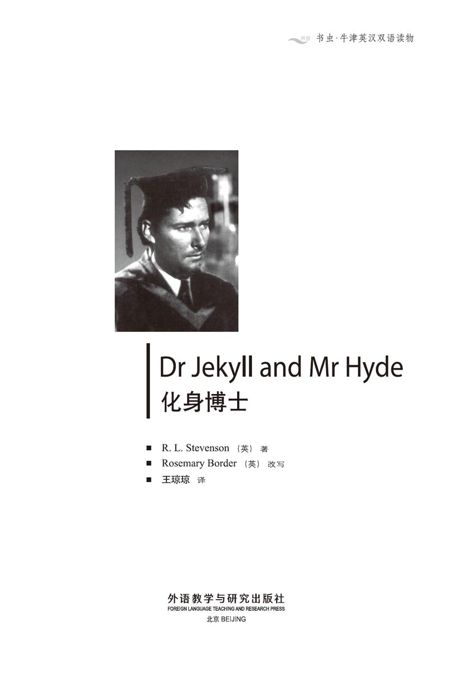
版权页
京权图字 01-97-0351
Originally published by Oxford University Press, Great Clarendon Street, Oxford. © 1991
This Edition is licensed for sale in the People's Republic of China only and not for export therefrom.
Oxford is a registered trademark of Oxford University Press.
图书在版编目（CIP）数据
化身博士＝Dr Jekyll and Mr Hyde／（英）史蒂文森（Stevenson，R.L.）著；（英）博德（Border，R.）改写；王琼琼译．—北京：外语教学与研究出版社，1997.12（2014.12重印）
（书虫·牛津英汉双语读物）
ISBN 978-7-5600-1377-0
Ⅰ．化… Ⅱ．①史…②博…③王… Ⅲ．小说—英国—对照读物—英、汉 Ⅳ．H319.4：I
中国版本图书馆CIP数据核字（98）第01428号
出版人： 蔡剑峰
责任编辑：田 娜
出版发行：外语教学与研究出版社
社 址：北京市西三环北路19号（100089）
网 址：http://www.fltrp.com
版 次：1998年8月第1版
书 号：ISBN 978-7-5600-1377-0
* * *
凡侵权、盗版书籍线索，请联系我社法律事务部
举报电话：（010）88817519
电子邮箱：banquan@fltrp.com
法律顾问：立方律师事务所 刘旭东律师
中咨律师事务所 殷 斌律师
简介
简 介
你是否想过变成另外一个人？是否曾看着你所认识的某个人想：“他想干什么就干什么，怎么我就不行？”你是否想到变成另外一个人，就算只有一天，你也可以随心所欲了，想干什么就干什么？没人会为此指责你的，因为没人知道那个人就是你——本来么，那已经不是你了。要是变成了另一个人该多么刺激啊！一天，偶尔一下也可以，就是别太久了，否则要是总变成别的人，也许真会成了别人，再难变回自己了。
这些想法对有的人来说是很危险的，尤其对杰基尔博士就是这样，因为他是个聪明绝顶的科学家，他找到了一种方法，把幻想变成了现实。
罗伯特·路易斯·史蒂文森（1850—1894）是苏格兰著名的小说家，著有长篇、短篇小说、旅行札记、诗歌和戏剧等作品。他的著名小说《化身博士》曾被多次搬上银幕。
目录
1．The mysterious door
1
The mysterious door
Mr Utterson the lawyer was a quiet, serious man. He was shy with strangers and afraid of showing his feelings. Among friends, however, his eyes shone with kindness and goodness. And, although this goodness never found its way into his conversation, it showed itself in his way of life. He didn't allow himself many enjoyable things in life. He ate and drank simply and, although he enjoyed the theatre, he had not been to a play for twenty years. However, he was gentler towards other men's weaknesses, and was always ready to help rather than blame them. As a lawyer, he was often the last good person that evil-doers met on their way to prison, or worse. These people often carried with them memories of his politeness and fairness.
Mr Utterson's best friend was a distant cousin called Richard Enfield, who was well known as a fun-loving 'man about town'. Nobody could understand why they were friends, as they were different from each other in every way. They often took long walks together, however, marching through the streets of London in companionable silence.
One of these walks used to take them down a narrow side-street in a busy part of London. It was a clean, busy, friendly street with bright little shops and shiny doorknockers. Near the end of this street, however, stood a dark, mysterious, windowless building. The door had neither bell nor knocker and looked dusty and uncared for. Dirty children played fearlessly on the doorstep, and nobody ever opened the door to drive them away.
One day, as Mr Enfield and his friend passed the building, Mr Enfield pointed to it.
'Have you ever noticed that place?' he asked. 'It reminds me of a very strange story.'
'Really?' said Mr Utterson. 'Tell me.'
'Well,' began Enfield, 'I was coming home about three o'clock on a black winter morning, when suddenly I saw two people. The first was a short man who was walking along the street, and the second was a little girl who was running as fast as she could. Well, the two bumped into each other and the child fell down. Then a terrible thing happened. The man calmly walked all over the child's body with his heavy boots, and left her screaming on the ground. It was an inhuman thing to do. I ran after the man, caught him and fetched him back. There was already a small crowd around the screaming child. The man was perfectly cool, but he gave me a very evil look, which made me feel sick in my stomach. The child's family then arrived, and also a doctor. The child had been sent to fetch the doctor for a sick neighbour, and was on her way home again.
'"The child is more frightened than hurt," said the doctor—and that, you would think, was the end of the story. But, you see, I had taken a violent dislike to the short man. So had the child's family—that was only natural. But the doctor, who seemed a quiet, kindly man, was also looking at our prisoner with murder in his eyes.
'The doctor and I understood each other perfectly. Together we shouted at the man, and told him we would tell this story all over London so that his name would be hated.
'He looked back at us with a proud, black look. "Name your price," he said.
'We made him agree to a hundred pounds for the child's family. With another black look, the man led us to that door over there. He took out a key and let himself into the building. Presently he came out and handed us ten pounds in gold and a cheque for ninety pounds from Coutts's Bank. The name on the cheque was a well-known one.
'"See here," said the doctor doubtfully, "it isn't usual for a man to walk into an empty house at four in the morning and come out with another man's cheque for nearly a hundred pounds."
'"Don't worry," said the man with an ugly look, "I'll stay with you until the banks open, and change the cheque myself."
'So we all went off, the doctor and the prisoner and myself, and spent the rest of the night at my house. In the morning we went together to the bank. Sure enough, the cheque was good, and the money was passed to the child's family.'
'Well, well,' said Mr Utterson.
'Yes,' said Enfield, 'it's a strange story. My prisoner was clearly a hard, cruel man. But the man whose name was on the cheque was well known all over London for his kind and generous acts. Why would a man like that give his cheque to a criminal?'
'And you don't know if the writer of the cheque lives in that building?' asked Mr Utterson.
'I don't like to ask,' said his friend. 'In my experience, it's not a good idea to ask too many questions, in case the answers are ugly, violent ones. But I've studied the place a little. It doesn't seem like a house. There's no other door, and the only person who uses that door is the man I've just described to you. There are three windows on the side of the house, which look down onto a small courtyard. The windows are shut, but they're always clean. There's a chimney too, which is usually smoking. So somebody must live there.'
The two men continued on their walk. Then Utterson broke the silence.
'Enfield,' he said, 'you're right about not asking too many questions. However, I want to ask the name of the man who walked over the child.'
'Very well,' said Enfield. 'He told us his name was Hyde.'
'What does he look like?'
'He's not easy to describe, although I remember him perfectly. He's a strange-looking man. He's short, but has a strong, heavy body. There's something wrong with his appearance, something ugly and unpleasing—no, something hateful. I disliked him at once.'
Mr Utterson thought deeply. 'Are you sure he used a key?' he asked.
'What do you mean?' asked Enfield in surprise.
'I know it must seem strange,' said his friend. 'But you see, if I don't ask you the name on the cheque, it's because I know it already...'
'Well, why didn't you tell me?' said his friend rather crossly. 'Anyway, he did have a key, and he still has it. I saw him use it only a week ago.'
Mr Utterson looked at him thoughtfully, but said nothing more.
weakness n. fault or defect of character. 缺点；弱点。
evil adj. wicked, sinful, bad, harmful. 邪恶的。
memory n. sth. that you remember. 记忆；回忆。
distant cousin a relative who does not have close blood relationship, far off in family relationship. 远房表亲。
'man about town' one who spends much time in society, in clubs, at parties etc. 交际场里的老手；爱热闹的人。
companionable adj. friendly, sociable. 友好的。
side-street minor street branching off a main street. 不是主要干道，小路，小街。
mysterious adj. difficult to understand. 神秘的；诡秘的。
uncared for not looked after, neglected. 没人理睬。
fearlessly adv. without fear. 毫不畏惧地；无所顾忌地。
doorstep n. a small step outside the main door to a house or building. 门口的台阶。
bump into come against with a blow or knock. 撞上。
calmly adv. not excited, untroubled, quiet. 平静地；镇定地。
inhuman adj. cruel, unfeeling. 无人性的，野蛮的，残忍的。
fetch v. go for and bring back sb. or sth. 接来，去拿。
violent dislike a strong feeling of hatred. 强烈的憎恶。
The doctor and I understood each other perfectly. We knew both of us wanted Hyde to pay the girl's family. 我和医生彼此心照不宣，意为要海德赔钱。
cheque n. written order (usually on a printed form) to a bank to pay money. 美国英语拼法为check [tʃek]，支票。
doubtfully adv. full of uncertainty, feeling doubt. 未确定地，怀疑地。
change the cheque give the money in return. 把支票兑成钱。
criminal n. a person who commits a crime or crimes. 罪犯。
in case if it should happen, because of a possibility. 或许，万一出现什么样的情况。
describe v. say what is like. 叙述，描述。
chimney n. structure through which smoke from a fire is carried away through the wall or roof of a building. 烟囱。
continue v. go on (being or doing), stay at/in. 仍旧；继续。
appearance n. what someone or something looks like. 外表；外观。
unpleasing adj. uncomfortable, disagreeable. 令人不舒服的。
一扇神秘的门
1 一扇神秘的门
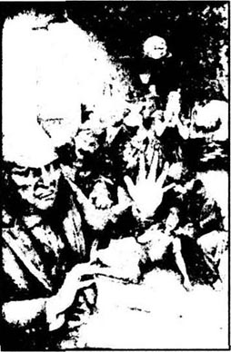
律师厄特森先生是个沉默寡言、严肃的人。在陌生人面前，他非常腼腆，不爱流露自己的情感，可当着朋友，他的眼睛总闪烁着关怀与真诚的光芒。虽然这种真与善他从不挂在嘴上，可他的待人处世能让人感觉到。在生活上，他从不放纵享乐。饮食随意、简单；即使很喜欢看戏，他也有20年没有进过剧院了。可是，他对别人的缺点却是宽容得不能再宽容了，总是想着去帮助他们而不是责备他们。作为一名律师，他经常是罪犯走进监狱或者踏上黄泉之前见到的最后一个好人。这些人的心里会一直保留着对他的温文尔雅和公正无私的记忆。
厄特森先生最要好的朋友是他的一个远房表亲，叫理查德·恩菲尔德。这个人是城里出名的“爱热闹”，交际场里的老手。谁也搞不明白他们为何是朋友，他们可真有天壤之别。但他们却经常一起散步，一走就是好远，穿过伦敦的街道，安安静静地做着伴。
有一次，他们又一起散步。走到伦敦闹市区一条狭窄的背街上。这条街干净、热闹，人们也和善，一家家亮亮堂堂的小商店，门环锃明透亮。但是就在街道的尽头，有一幢阴暗、神秘、没有窗户的楼房，门上既没有铃也没门环，还到处是灰，显然已好久没人打扫了。脏兮兮的孩子们在门口疯玩疯闹，也没人开门轰他们走。
一天，他俩路过这幢房子时，恩菲尔德指着问道：“你注意过那儿吗？它让我想起一个非常奇怪的故事。”
“哦，是吗？”厄特森先生说，“给我讲讲。”
“好吧。”恩菲尔德先生开始讲了，“那是个冬天的早上，天黑漆漆的，大概3点钟吧，我正要回家，突然看见两个人。头一个是个矮个子男子，正沿着街边走，第二个是个小姑娘，跑得很急。两个人一下撞到了一起，小孩儿摔倒了。接着，可怕的事发生了，那个人穿着沉甸甸的靴子，冷静地从孩子身上踩过去，小姑娘躺在地上尖叫着。做这种事真残忍。我从后面追上来，抓住那人，把他拽了回来，这时一小群人围到了又哭又叫的孩子身边。那个人非常镇静，一脸漠然，还狠狠地瞪了我一眼，真是让我反胃。孩子的家人这会儿也赶到了，还来了一个医生。原来小姑娘是去请医生给邻居家病人看病的，她正要回家。”
“‘孩子与其说是伤着了不如说是吓着了。’医生是这么说的。你也许以为故事到这里就该结束了。可是你想，我对那个小个子十分厌恶，小姑娘的家人也一样——当然，这很正常，可连医生（他看上去那么和善、安静），也盯着那个罪犯看，好像恨不能把他给杀了。”
“我和医生彼此心照不宣，都冲着那人大声指责，说要让整个伦敦都知道这事，让人人都唾弃他的名字。”
“他生气地瞪了我们一眼，一副傲慢的样子，‘开个价吧，’他说。”
“我们让他答应付给孩子的家人100英镑。他又瞪了我们一眼，把我们领到那边的那扇门口，掏出钥匙，进了楼。不一会儿，他又出来了，递给我们10镑金币和一张康茨银行的支票，上面写着90英镑，支票上的名字是大家都很熟的人。”
“‘你看，’医生满腹怀疑地说，‘够奇怪的，早上4点，一个人走进一所空房子，然后又拿着另一个人签名的支票出来了，足足100镑呢！’”
“‘放你的心吧，’那个一脸凶相的矮个子说，‘我和你们等到银行开门，看我自己兑钱好了。’”
“我们都离开那儿，医生、那位肇事者和我到我家挨过了后半夜。到了早上，我们一道去了银行，支票是真的，没问题，钱很快就转给小姑娘的家人了。”
“哦，是这样，”厄特森先生说。
“是啊！”恩菲尔德说，“这事真怪。肇事者明明是个冷酷、残忍的家伙，可签支票的人却是伦敦有名善良、慷慨的人。这样的人怎么会把支票给一个罪犯呢？”
“你们也不知道支票的主人是不是住在那幢房子里？”厄特森先生问。
“我可不喜欢问，”他的朋友说，“根据我的经验，提太多的问题可没什么好的。万一得到的答案既令人厌恶又令人不安，那该如何是好？但我还是稍微研究了一下那个地方。它看起来不像一所房子，没别的门，唯一使用那扇门的人就是我刚才和你讲的那个家伙。房子一侧有三扇窗户，可以看到下面的小院，窗户都关着，但一直干干净净的。还有个烟囱常冒着烟，所以肯定有人在那儿住。”
两个人继续走着，厄特森忽然说：
“恩菲尔德，你那条规矩挺不错，就是别问太多问题。尽管如此，我还是想问问踩着孩子身体走过去的那个人叫什么。”
“当然了！”恩菲尔德说，“他告诉我们他叫海德。”
“他长得什么模样？”
“这一下子可说不好，虽然我清清楚楚记得他长得什么样。他长得怪异，个子虽然矮，但是身体粗壮。他的相貌有点不对劲，让人感到丑陋，不舒服——不，是让人憎恶的那种。我看他的第一眼就不喜欢他。”
厄特森先生想了好一会儿，问道：“你肯定他用了钥匙吗？”
“你的意思是？”恩菲尔德一脸诧异的样子。
“我知道我这么问似乎有点怪，”朋友说，“可你想，我并没问你支票上签的是谁的名字，因为我心里已经明白了……”
“那你怎么不早说呢？”朋友不无恼怒地说，“甭管怎么说，那家伙的确有钥匙，上礼拜我还看见他开门来着。”
厄特森先生若有所思地看了他一眼，但没再多说什么。
2．In search of Mr Hyde
2
In search of Mr Hyde
After dinner that evening Mr Utterson went into his office and unlocked a cupboard. He took out an envelope. It contained the will of Doctor Henry Jekyll, and was written in the doctor's own handwriting.
'If I die, or if I disappear for more than three months,' the will began, 'I wish to leave everything I own to my dear friend Edward Hyde.'
This will had both worried and annoyed Mr Utterson. To a lawyer it was an unusual and dangerous kind of will. It was bad enough when Edward Hyde was only an unknown name, but now that the lawyer knew something about Hyde, the will worried him more than ever. It had seemed like madness before; now it began to seem shameful. With a heavy heart Mr Utterson replaced the envelope in the cupboard, put on his coat and went to see his old friend Doctor Lanyon.
Doctor Lanyon was enjoying his after-dinner coffee. 'Come in, old friend!' he cried. The two men had known each other since their school days. They sat for several minutes, drinking coffee and talking companionably of this and that. At last Mr Utterson mentioned the thoughts that were worrying him.
'I suppose, Lanyon,' he said, 'that you and I are Henry Jekyll's oldest friends?'
'I suppose so,' said Doctor Lanyon, 'but I don't often see him now.'
'Really?' said Mr Utterson in surprise. 'I thought you and he were interested in the same things.'
'We were at one time,' said Doctor Lanyon. 'But more than ten years ago Henry Jekyll became too—well, imaginative for me. He developed some strange, wild, unscientific ideas. I told him so, and I've seen very little of him since then.'
Mr Utterson looked at his friend's red, angry face. 'Only a disagreement about some scientific question,' he thought. 'It's nothing worse than that.' Calmly he continued, 'Did you ever meet a friend of Jekyll's—a man called Hyde?'
'Hyde?' repeated Lanyon. 'No, never.'
Soon the lawyer said goodnight and went home to bed, where he lay awake for a long time thinking about Enfield's description of Hyde, and Doctor Jekyll's will. When at last he fell asleep, he was troubled by dreams. In his mind's eye he saw a faceless man marching over the child's body. Then he saw his old friend Jekyll in bed, while the same faceless figure stood over him. The facelessness of that figure worried him deeply.
'Very well, Mr Hyde,' said the lawyer to himself, 'I will find you, and I will see your face for myself.'
During the next few weeks Mr Utterson spent many hours in the narrow street where Enfield had seen Hyde. He waited patiently near the mysterious door, hoping for a sight of Mr Hyde—and one dry, clear winter night he was successful. The street was empty and silent and small sounds carried a long way. The lawyer heard footsteps. He stepped back into the shadows and waited. A short figure turned the corner and walked towards the mysterious door. Although Mr Utterson could not see his face, he felt a strong, almost violent, dislike for the stranger.
Mr Utterson stepped forward and touched him on the shoulder. 'Mr Hyde?'
'Yes, that's my name,' said the stranger coolly. 'What do you want?'
'I see that you're going in. I'm an old friend of Doctor Jekyll's. My name is Utterson. You must have heard my name—may I come in with you?'
'Doctor Jekyll is not at home,' replied Mr Hyde. 'How did you know me?' he added sharply.
'First let me see your face,' replied the lawyer.
Mr Hyde hesitated for a moment, then he stood under the street light and the lawyer saw his face. 'Thank you,' said Mr Utterson. 'Now I shall know you again. It may be useful.'
'Yes,' said Mr Hyde, 'it may indeed be useful. Here, too, is my address. You may need it one day.' He gave the lawyer his address, which was in a poor part of London.
'Good God!' thought the lawyer, 'does Hyde know about Jekyll's will? Is that what he's thinking of?' But he said nothing.
'And now,' said Mr Hyde, 'How did you know me?'
'You were described to me.'
'Who did that?'
'I know people who know you.'
'Who?' asked Mr Hyde sharply.
'Doctor Jekyll, for example,' said the lawyer.
'He never told you!' cried Mr Hyde in sudden anger. 'Don't lie to me!' And before the lawyer could answer, he turned the key in the lock and disappeared into the house.
Mr Utterson stared at the closed door. 'Why do I dislike him so much?' he said to himself. 'Enfield was right—there is something evil about the man. Poor Henry Jekyll, I'm worried about you. Your new friend will mean trouble for you.'
Round the corner from the narrow street there was a square of handsome old houses. One of these was Doctor Jekyll's house, and Mr Utterson knocked at the front door. The servant answered and told him that Doctor Jekyll was not at home.
'I saw Mr Hyde go in by the laboratory door in the street at the back of the house,' said the lawyer.
'That's right, Mr Utterson,' replied the servant. 'Mr Hyde has his own key, and comes and goes when he likes. We have orders from Doctor Jekyll to obey him.'
Mr Utterson walked home more worried than ever.
A fortnight later Doctor Jekyll gave a dinner party for a few old friends. Mr Utterson was among them and he remained after the others had left.
'I've been wanting to speak to you for some time, Jekyll,' said the lawyer, 'about your will.'
Doctor Jekyll was a tall, well-made man of fifty with a smooth, kindly face. 'My poor friend,' he said, 'you do worry unnecessarily, you know. Like poor Lanyon when I told him about my new ideas. "Imaginative rubbish" he called them... I'm very disappointed in Lanyon.'
But the lawyer did not want to talk about Doctor Lanyon. 'You know I've never agreed with your will,' he continued.
'You've told me often enough,' said his friend sharply.
'Well, I've learnt something about your friend Hyde,' continued the lawyer.
The colour of the doctor's handsome face changed from pink to greyish-white. 'I don't want to hear any more,' he said. 'You don't understand. I'm in a very difficult, painful situation.'
'Tell me everything,' said Mr Utterson, 'and I'll do my best to help you.'
'You're very kind, but this is a private matter. I'll tell you one thing—I can get rid of Mr Hyde any time I want. You must understand, however, that I take a great interest in poor Hyde. I know you've seen him—he told me, and I'm afraid he wasn't very polite to you. But I really do care about him. And if anything happens to me, I want you to promise to make sure that he inherits my money.'
'I cannot pretend that I shall ever like him,' said the lawyer.
'I'm not asking you to like him,' said his friend. 'I only ask you to help him, when I'm gone.'
'I promise,' said Mr Utterson sadly.
cupboard n. set of shelves with doors, either built into a room as a fixture, or a separate piece of furniture, you can put in documents, clothes or dishes. 柜橱。
will n. someone's written wishes that say who will inherit their money after they die. 遗嘱。
annoy v. make rather angry. 使感到不快；苦恼。
shameful adj. causing or bringing shame, dishonourable. 可耻的；丢脸的；不体面的。
replace v. put back in its place. 放回原处；接替。
imaginative adj. of, having, using imagination. 富有想像力的，幻想的。
developed some strange... ideas formed some unusual thoughts. 形成了一些奇怪的观点。
unscientific adj. not of or belonging to science. 不科学的。
disagreement n. absence of agreement. 分歧，不同意。
mind n. the part of the body in the head that thinks, feels and remembers. 脑子。
in one's mind's eye 在脑海里浮现出。
figure n. human form, especially the appearance and what it suggests. 人形；人影；形象。
patiently adv. having or showing power of enduring trouble, suffering inconvenience. 耐心地。
Good God! 哦！天哪！西方人信仰上帝，总把神挂在嘴边，尤其是惊讶或者害怕的时候。
lie v. make a statement that one knows to be not true. 撒谎。注意该词还有另外一个意思是躺下。
square n. an open area enclosed by streets and buildings. 小方场，广场。
handsome adj. of fine appearance (of men), good-looking. 英俊；漂亮（多指男性）。这里指房子富丽堂皇。
servant n. a person who is paid to work in another person's house. 仆人。
laboratory n. a room where scientists work and do experiments. 实验室。科学家工作、做实验的地方。
fortnight n. two weeks. 两星期。
well-made adj. well-built, healthy. 结实的；匀称的。
unnecessarily adv. no need. 没必要地。
disappointed adj. sad at not getting what was hoped for. 失望的。
greyish adj. somewhat grey. 灰色的。
painful adj. causing pains, sufferings. 痛苦的；难受的。
寻找海德先生
2 寻找海德先生
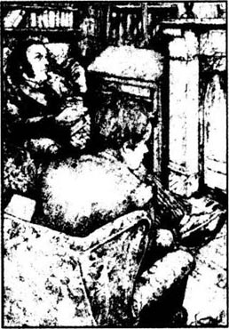
那天晚上，吃过饭，厄特森先生走进自己的办公室，打开柜橱上的锁，拿出一个信封，里面装的是亨利·杰基尔博士的遗嘱，是立书人亲笔写的。
“如果我死了，或者三个月不见踪影，”遗嘱上写道，“我希望把所有一切留给我亲爱的朋友——爱德华·海德。”
这份遗嘱让厄特森先生坐立不安。作为一名律师，他觉得这样的遗嘱既少见又危险。今天之前，他对这个爱德华·海德一无所知，这就够糟的了。可现在知道了一些有关海德的事情，遗嘱就更让他担忧了。如果说以前这一切看起来是疯狂的，那么现在这个名字令人可耻。厄特森先生心事重重地把文件放进柜子里，穿上大衣，去找他的老朋友兰宁医生。
兰宁医生正在品着饭后的咖啡。“哈！老朋友，快进来！”他大声嚷着。他们俩从上学的时候起就认识。俩人坐在一起，一边喝咖啡，一边闲扯着，最后厄特森先生谈起了自己心中的不安。
“我想，兰宁，”他说，“你我应该是亨利·杰基尔结交最久的朋友了吧？”
“我想是吧，”兰宁医生说，“不过，我最近不常见他。”
“哦，是吗？”厄特森有些吃惊地说，“我还以为你和他兴趣相投呢！”
“曾经有过，”医生接着说，“不过，十多年前，亨利·杰基尔变得——嗯，对我来讲太不可思议了。他脑子里装了一些奇怪、荒唐、不科学的想法，我就是这么和他说的。从那以后，我就很少见到他了。”
厄特森先生看着朋友气呼呼、涨红的脸，心想：“只不过是科学见解上的分歧，并没有什么大不了的。”他不动声色地又问：“你有没有见过杰基尔的一个朋友——一个叫海德的朋友？”
“海德？”医生重复了一遍这个名字，“没有，从来没有。”
不一会儿，律师道了晚安，回家睡觉了。可他躺在床上好长时间还想着恩菲尔德说的海德的样子，还有杰基尔博士的遗嘱。好不容易睡着了，可是一个梦接着一个梦，让他心绪不宁。梦里仿佛看见一个没有脸的人重重踩过孩子的身体，又看见老朋友杰基尔躺在床上，那个没有脸的人站在他身上。那个没有脸的人着实让他担心。
“走着瞧，海德先生，”律师自言自语地说，“我一定要找到你，亲眼看看你的模样。”
接下来的好几个星期，厄特森先生在恩菲尔德看见海德的那狭窄的街道上徘徊了好久。他在那扇神秘的门旁耐心等着，希望能发现海德先生的踪迹。终于，一个清冷的冬夜，他遇上了海德。那天晚上，街道空荡荡的，寂静无声，一点响动都能传出去好远，律师突然听见了脚步声。他躲在阴暗处，等着。一个小个子男人转过街角，朝那扇神秘的门走去。虽然看不见陌生人的脸，但厄特森先生还是强烈地感到一种憎恨。
厄特森先生紧走几步，轻轻拍了拍那人的肩膀：“是海德先生吧？”
“正是，”陌生人冷冰冰地说，“你想怎么样？”
“我看见您正要进门。我是杰基尔博士的好朋友，叫厄特森，您一定听他提过我，我能和您一起进去吗？”
“杰基尔博士这会儿不在家，”海德回答说。突然他机警地问道：“你怎么知道我的名字？”
“先让我看看您的脸再说。”律师回答道。
海德犹豫了一下，接着站到路灯下，律师看清了他的脸，说：“谢谢您，我有幸认识您了，这也许会有用的。”
“不错，”海德说，“确实会有用的。喏，还有我的地址，说不定有一天您用得着。”他说了自己的住处，在伦敦的一个贫民区。
“天哪！”律师想，“海德一定知道杰基尔的遗嘱吧？他打的就是这个主意吧？”但律师没说出来。
“那么，”海德问，“你怎么会知道我呢？”
“听人跟我讲起过您。”
“谁说的？”
“咱们都认识的。”律师说。
“是谁？”海德厉声问道。
“譬如说，杰基尔博士。”律师答道。
“他决不会和你说的！”海德突然生气地吼了起来，“别想骗我了！”还没等律师答话，他掏出钥匙开了门，消失在屋里。
厄特森先生盯着紧闭的大门，自言自语道：“我怎么那么不喜欢他呢？恩菲尔德说得对，这个人骨子里有股邪气。可怜的亨利·杰基尔，真让人为你担心，你这个新朋友会给你惹麻烦的。”
在小街的拐弯处有一个广场，里面的建筑都是些富丽堂皇的老房子，其中有一幢是杰基尔博士的。厄特森先生敲响了前门，仆人开了门，告诉他博士这会儿不在家。
“我看见海德先生从屋子后面的街上，从实验室的门进来了。”律师说。
“是的，厄特森先生，”仆人回答说，“海德先生自己有钥匙，想来就来，想走就走，主人吩咐过我们要服从他。”
厄特森先生回家时，心里更担心了。
两个星期后，杰基尔博士请老朋友上他家吃饭，厄特森先生也去了，而且一直呆到别人都告辞了。
“杰基尔，我一直想和你谈谈，”律师说，“是你那份遗嘱的事。”
杰基尔博士五十开外，高高的个子，身材匀称，总是一副安详、和善的表情。“我可怜的朋友，”他说，“真没必要担什么心，就和那个可怜的兰宁一样，我把自己的想法告诉他，他却说是‘幻想的垃圾’……他真让我失望。”
但是律师并不想谈兰宁医生，他接着说：“你明白，我从来就没同意过你那份遗嘱！”
“你早告诉过我好几回了！”博士的话有点刺耳。
“那就好。不过我最近听到一些有关你的朋友海德的事。”律师继续说。
博士那英俊、红润的脸庞一下子变得灰白。“我不想再听了，”他说，“你不明白，我现在的处境有多困难，多痛苦。”
“把一切都告诉我，”厄特森先生说，“我会尽力帮你的。”
“你待我真好，可这是我个人的事。我只能告诉你一件事——只要我愿意，随时可以摆脱这个海德先生。但有一点希望你能理解，我对可怜的海德也极为关注。我知道你见过他——他告诉我了，我担心他对你有所冲撞，但我确实很关心他，要是我出了什么不测，你一定要保证让他继承我的财产。”
“我没法假装自己喜欢他。”律师说。
“我并不要求你喜欢他，”他的朋友说，“我只要你帮助他，要是我不在了。”
“好吧，我答应你。”厄特森先生忧郁地说。
3．The Carew murder
3
The Carew murder
One night in London, nearly a year later, a servant girl was sitting at her bedroom window, looking out at the moonlit street. She saw a tall, handsome old man with white hair coming along the street, and a shorter, younger man walking towards him. The old man spoke politely to the younger one. He seemed, the girl said later, to be asking his way. Then the girl looked more closely at the younger man and recognized him.
'It was Mr Hyde,' she said later. 'He once visited my master.'
Mr Hyde, the girl said, was carrying a heavy stick. He was playing with it impatiently as he listened to the old man. Then suddenly he seemed to explode with anger.
'He was like a madman,' the servant girl said. 'He shook his stick at the old man, who stepped back in surprise. Then he hit the old man violently with the stick and knocked him to the ground. He beat the helpless body again and again. I could hear the bones breaking... It was so terrible that I began to feel ill. Then everything went black and I don't remember any more.'
It was two o'clock in the morning before she was conscious again, and able to call the police. The murderer had disappeared, but the dead man was still lying on the ground with the murder weapon beside him. The stick had broken in the middle, and one half still lay beside the murdered man. The police decided that the murderer had carried away the other half. A gold watch and a purse were found in the dead man's pockets, but no cards or papers—except a letter addressed to Mr Utterson.
A policeman brought this letter to the lawyer the next morning. Together they drove to the police station where the body had been taken.
A police inspector showed him the body.
'Yes, I recognize him,' said Mr Utterson heavily. 'He is Sir Danvers Carew.'
'Thank you, sir,' said the inspector. 'And do you recognize this?' He showed Mr Utterson the broken stick and told him the servant girl's story.
Mr Utterson knew the stick at once. 'That's Henry Jekyll's stick!' he said to himself. 'I gave it to him long ago.'
'Is this Hyde a short, evil-looking man?' he asked.
'That's how the servant girl described him, sir,' agreed the inspector.
'Come with me,' said Mr Utterson to the inspector. 'I think I know where he lives.'
Mr Utterson led him to the address on Mr Hyde's visiting card. It was in a poor part of London, in a dirty street full of cheap bars and eating-houses. This was the home of Henry Jekyll's favourite friend—the man who would inherit Jekyll's quarter of a million pounds.
An old servant opened the door. Under her silvery hair was a smooth face with a false smile and evil eyes, but she was polite enough.
'Yes,' she said, 'Mr Hyde lives here. But he's not at home. My master came in very late last night. He left again after only an hour.'
'Was that unusual?' asked the inspector.
'Not at all,' replied the servant. 'He's often away, and frequently stays away for months at a time.'
'We would like to see his flat,' said Mr Utterson.
'Oh, I can't do that, sir—' began the servant.
'This gentleman is a police inspector,' said Mr Utterson.
'Ah!' said the servant, looking unnaturally pleased about it, 'Mr Hyde's in trouble! What's he done?'
Mr Utterson and the inspector looked at each other. 'He doesn't seem a very popular person,' said the inspector. He turned to the servant. 'Now please let us in and we'll have a look around.'
Mr Hyde had only two rooms in the house. These were extremely comfortable and in excellent taste, with beautiful pictures on the walls and rich carpets on the floor. Everything was wildly untidy, however, and the fireplace was full of half-burnt papers. Among these the detective found part of a cheque book. He also found the other half of the murder weapon.
'Excellent!' he said. 'Now let's visit the bank and see if they recognize this cheque book.'
Sure enough, the bank held several thousand pounds in an account in the name of Edward Hyde.
'We've got him now, sir,' said the inspector. 'We've got the murder weapon, and we've got his cheque book. Now we only need his description on the "Wanted" notices.'
This was not so easy. There were no photographs of the wanted man and no two people could agree about his appearance. They all agreed on one thing, however. 'An evil man, sir,' the servant girl said. 'You could see it in his face.'
moonlit adj. lit by the moon. 洒满月光；有月光的。
look... closely look at sth. attentively. 凑近仔细地看。
stick n. piece of wood cut, shaped for special purpose, a walking stick. 手杖。
explode v. of feelings burst out, show violent emotion. 爆发，爆炸。
everything went black lose one's consciousness, not to remember anything. 眼前一片漆黑。
conscious adj. awake, aware. 苏醒的，有意识的。
weapon n. sth. designed for, or used in, fighting or struggling. 武器，这里是指凶器。
police inspector a person who is in charge of a police station. 警长。
visiting card card on which a person's address is included. 名片，或叫business card，最好不要称为name card，（因为这个词指单位的人员佩戴的胸卡，亦称名卡）。
frequently adv. often, habitually. 经常地。
flat n. British English: suite of rooms on one floor of a building as a residence. 英国英语，公寓；美国英语称为apartment.
popular person person who is liked and admired. 受人欢迎的人。
comfortable adj. well-decorated, well-designed. 舒适的；安逸的。
taste n. ability to enjoy beauty, in art and literature. 味道，这里指品味。
detective n. person whose business is to detect criminals. 侦探；警长。
account n. a way of keeping your money in a bank. 账户；户头。
wanted man person who is suspected of wrong doing is being looked for by the police. 被通缉的人。
卡鲁命案
3 卡鲁命案
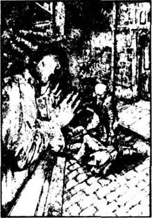
差不多一年以后的一天晚上，在伦敦，一个女仆坐在她卧室的窗台边，看着洒满月光的街道。这时，她看到一位满头白发、面容矍铄的高个子老人沿着马路走过来，迎着他走过来的是一个身材矮小、年纪稍轻的男人。老人彬彬有礼地和那人说着话，据女仆后来讲，他好像在问路，然后女仆又转眼看了看那个年纪稍微轻一点的人，认出了他。
“是海德先生，”女仆后来讲，“他到主人家来拜访过一次。”
那姑娘说，海德先生手里拿着一根沉甸甸的手杖，一边听着老人的话，一边很不耐烦地把玩着。突然间，他好像怒气一下子爆发了。
“他好像疯了一样，”女仆回忆道，“冲老先生挥着手杖，老先生往后一缩，非常惊讶，接着他抄起手杖，举起来就打，把老先生打倒在地。他拼命用手杖狠揍无助的老人，我都听见了骨头碎裂的声音……这太可怕了，我觉得一阵难受，眼前一片漆黑，就什么也不知道了。”
等她苏醒过来，已是凌晨2点了，她去报了警，凶手早已逃之夭夭。尸体还躺在地上，旁边就是凶器。手杖从中间断开了，一半滚落在尸体旁边，另一半警察断定是凶手拿走了。在死者衣袋里发现了一块金表和一个钱包，但没有名片或任何纸张，只有一封写给厄特森先生的信。
警察第二天一早就把信交给了律师。他们一起赶到警察局，尸体还在那儿停放着。
警长带他看了尸体。
“不错，我认识他，”厄特森先生心情沉重地说，“他是丹佛斯·卡鲁爵士。”
“谢谢您，先生，”警长说，“您也认识这个吗？”说着他拿出折断的手杖让厄特森先生看，又给他讲了女仆看到的情况。
厄特森先生一下认出了手杖，“是亨利·杰基尔的手杖！”他自言自语地说，“是我老早以前送给他的。”
他问：“这个海德先生是不是个相貌凶狠的小矮个？”
“女仆是这么说的，先生。”警长附和道。
“跟我来，”厄特森先生对警长说，“我想我知道他住在哪儿。”
厄特森先生把他带到海德先生名片上的地址，在伦敦的贫民区，在一条到处是低级酒馆和饭馆的街上，这就是亨利·杰基尔心爱的朋友的家，而且他还要继承杰基尔的25万英镑！
一个老女仆开了门，满头白发下面是一张光滑的脸，带着虚饰的微笑和不怀好意的眼神，但不管怎么说，她还算客气。
“是啊，”她说，“海德先生是住在这儿，可这会儿他不在家。昨晚主人很晚才回来，可一个小时之后又走了。”
“这样的事很少发生，是吗？”警长问。
“才不呢！”仆人答道，“他经常出去，一走就是好几个月。”
“我们想看看他的房间。”厄特森先生说。
“哦！那可不行，先生——”女仆说。
“这位先生可是警察局的警长。”厄特森先生说。
“啊！”女仆叫了一声，看起来异常高兴，“海德先生出麻烦了！他干了什么？”
厄特森先生和警长彼此看了看。“海德不太得人心啊！”警长说。接着转身又对女仆说：“那么请允许我们进去看一看。”
在这幢房子里，海德只用了两个房间，都布置得十分舒适，品味高雅。墙上挂着漂亮的画，地上铺着华丽的地毯。但屋里却满地狼藉，壁炉里都是快烧尽的纸片，在这个纸片堆里，警长发现了支票簿的一部分，还找到了另一半凶器。
“太好了！”他说，“现在就去银行，看他们能不能认出这个支票簿来。”
确实，银行的一个户头上以爱德华·海德的名字存了几千英镑。
“先生，他已经在我们手心里了，”警长说，“有凶器，有支票簿，现在只要在‘通缉令’上描述清楚他的相貌特征就行了。”
这可不那么容易。没有通缉犯的照片，能描述他外貌的人，说法又都不一样。只有一点大家都同意，那就是，像女仆所说的：“他是个邪恶的人，从他的脸上一下子就能看出来。”
4．Doctor Jekyll receives a letter
4
Doctor Jekyll receives a letter
Later that same afternoon Mr Utterson found his way to Doctor Jekyll's house. Jekyll's servant, Poole, let him in at once and took him through the kitchen and across the back garden to the laboratory behind the house. It was the first time that Mr Utterson had seen his friend's laboratory, and he looked around curiously.
The old servant led Mr Utterson through the laboratory and up some stairs to the doctor's private study above. This was a large room with tall, glass-fronted cupboards, a large mirror and a big, businesslike table. A good fire burned in the fireplace and beside it sat Doctor Jekyll, looking white and ill. In a thin, tired voice he welcomed his friend.
'Have you heard the news?' said Mr Utterson after the old servant had left.
'The newsboys were shouting about it in the street,' Doctor Jekyll said. 'A terrible business.'
'Let me ask you something,' said the lawyer. 'Sir Danvers Carew was my client, but you are my client too, and I want to know what I'm doing. You haven't tried to hide the murderer, have you?'
'Utterson, I promise you,' cried the doctor, 'I promise you I'll never see him again. I've finished with him for ever. And now, indeed, he no longer needs my help. You don't know him like I do. He's safe, quite safe. Believe me, nobody will ever hear of Hyde again.'
The lawyer listened with a serious face. He did not like his friend's feverish, excited look.
'You seem very sure of him,' he replied. 'I hope you're right. If he is caught and comes to trial, your name may be mentioned.'
'I'm absolutely sure of him,' answered Jekyll. 'I can't tell you how I know, but I'm certain. But can you please advise me about one thing? I've received a letter and I don't know whether to show it to the police. May I leave it in your hands, Utterson?'
'You're afraid, I suppose, that the letter will lead the police to Hyde?' asked the lawyer.
'No,' said Doctor Jekyll. 'I don't care what happens to Hyde. I was thinking of my own reputation... Anyway, here is the letter.'
It was written in a strange, pointed handwriting and signed 'Edward Hyde'. 'I am sorry that I have been so ungrateful in the past for your many generous acts,' it began. 'Please don't worry about me. I am quite safe and I am certain that I can escape unharmed whenever I wish.'
'Did this letter come by post?' asked the lawyer.
'No,' replied Doctor Jekyll. 'There was no postmark on the envelope. The letter came by hand.'
'Shall I keep the letter and think about it?' asked Mr Utterson.
'I want you to decide for me,' answered his client. 'I'm not sure of anything any more.'
'Very well,' said the lawyer. 'Now tell me—the part in your will about disappearing for three months or more. Was that Hyde's idea?'
'It was,' whispered Doctor Jekyll.
'He was planning to murder you,' said the lawyer. 'You've had a lucky escape.'
'I've had a lesson too,' said his client, in pain and sadness. 'Oh, what a lesson!' And he covered his face with his hands.
On his way out of the house, the lawyer stopped and spoke to Poole.
'By the way,' he said, 'a letter was handed in today for your master. Who brought it, and what did he look like?'
'Nobody came except the postman, sir,' said the servant in surprise.
'That worries me,' thought Mr Utterson as he walked home. 'Clearly the letter arrived by the laboratory door; perhaps it was even written in the study. I must think about this carefully.'
In the street the newsboys were still shouting, 'Read all about it! Terrible murder!'
The lawyer's thoughts were sad. One of his clients was dead, and the life and reputation of another were in danger. Mr Utterson did not usually ask anyone for advice. Today, however, was different.
That evening he sat by his fireside with his chief clerk, Mr Guest, beside him. The lawyer and his clerk had worked together for many years, and knew and understood each other. Also, Mr Guest had been involved in business with Doctor Jekyll and knew him well.
Outside it was foggy and dark, but the room was bright and warm and there was a bottle of good whisky on the table.
'This is a sad business about Sir Danvers Carew,' said Mr Utterson.
'Yes indeed, sir. The murderer was a madman, of course.'
'I would like your opinion about that,' replied the lawyer. 'I have a letter from the murderer here.'
Mr Guest was interested in the study of handwriting. His eyes brightened at once. 'A murderer's letter!' he said. 'That will be interesting.' He looked carefully at the writing. 'Not a madman, I think,' he said. 'But what unusual handwriting!'
Just then a servant entered with a note.
'Is that note from Doctor Jekyll?' asked Mr Guest. 'I thought I recognized the handwriting. Is it anything private, Mr Utterson?'
'Only an invitation to dinnner. Why? Do you want to see the letter?'
'Just for a moment, please, sir.' The clerk put the two letters side by side and studied them carefully. 'Thank you, sir,' he said. 'Very interesting.'
For a moment Mr Utterson hesitated, wondering and worrying. At last he put his thoughts into words. 'Why did you look at the two letters together?' he asked.
'Well, sir, in many ways the two are surprisingly similar.'
'How strange!... Mr Guest, I must ask you not to speak of this business to anyone.'
'Of course not, sir,' said the clerk. 'You can depend on me.' Shortly afterwards he said good night to his master and made his way home.
When he was alone, Mr Utterson locked the two letters in his cupboard. 'Well!' he thought. 'So Henry Jekyll wrote that letter for a murderer!' His face was as calm and expressionless as usual, but his heart was filled with fear for his old friend.
curiously adv. eager to know, greatly interested in sth. 好奇地。
businesslike adj. using, showing system, care. 井然有序的。
fireplace n. hearth for a fire in a room, usually of brick or stone in the wall 壁炉。
client n. someone who pays another person (e. g. a lawyer, a builder) to do a job for him. 委托人，当事人。
finish with no longer be engaged with, not be busy with sth. 一刀两断，与……结束了。
feverish adj. causing fever, having fever. 发热的；热病的。
trial n. examination in a law court before a judge. 审讯，审判。
absolutely adv. definitely and completely. 绝对的。
to be sure of somebody have confidence. 对某人很有把握。
reputation n. what people think or say about someone else. 名誉，名声。
pointed handwriting straight with sharp tip. 有尖头的笔体，直愣愣的。
ungrateful adj. feeling or showing no thanks. 不知恩图报的，没有良心的。
escape v. get free, get away, find a way out. 逃脱，逃走。
come by post letter-carrier or mail-cart send the letter to receivers. 由邮差送来的信。
I've had a lesson I have been given a warning. 我也受到了惩罚，我也得到了教训。
study n. room used by sb. for reading, writing. 在这里作名词，是书房的意思。
chief clerk person who is in charge of office work. 事务所主任。
involve v. to be connected with sth./sb. 与某事有关连，参与。
opinion n. views, beliefs of a group or a person. 看法。
private adj. opposite of public, concerning one person or a group, not people in general. 私人的；个人的。
depend on need, rely on the support in order to exist or to succeed. 依赖，依靠。
expressionless adj. without expression, expression: the look on one's face. 毫无表情的。
杰基尔博士收到一封信
4 杰基尔博士收到一封信
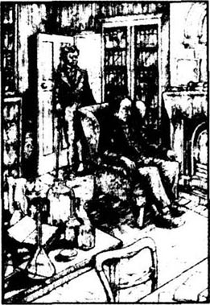
当天下午很晚了，厄特森先生才抽出空去杰基尔博士家。博士的仆人普尔马上让他进去，并领着他穿过厨房和后花园来到屋后面的实验室。这是厄特森先生第一次到他这个朋友的实验室来，他好奇地四处张望。
老仆人带他经过实验室，上楼来到博士的私人书房。屋子很大，周围都是镶着玻璃的柜子，还有一面大镜子和一张井然有序的大办公桌。壁炉里的火烧得很旺，火边坐着杰基尔博士，面色苍白，十分痛苦的样子。他声音微弱、无精打采地和朋友打了招呼。
“你也听说这事了？”老仆人刚一退下，厄特森先生就问。
“报童满街叫喊，”杰基尔说，“这太可怕了。”
“我要问你些事，”律师说，“丹佛斯·卡鲁是我的委托人，但你也是，我要知道自己该如何行事。你不会想把凶手藏起来吧？”
“厄特森，我向你保证，”博士喊道，“我保证再也不见他了，我已跟他一刀两断了。实际上他也不需要我的帮助了。我了解他，你不了解，他现在很安全，非常安全。相信我，没人会再见到海德了。”
律师听着，一脸的严肃，他不喜欢博士那发热病似的兴奋神态。
“看起来你对他挺放心，”他回答道，“希望你是对的。要是抓住了他，弄到法庭上，你的名字也会被提到的。”
“我对他的确有把握，”杰基尔回答说，“我不能告诉你为什么，但我的确放心。可有一件事我要请教一下，我刚收到一封信，我不知道是否应该交给警方，厄特森，我交给你，好吗？”
“我想，你是不是怕这封信会让警方追踪到海德？”律师问。
“不，”杰基尔博士说，“我倒不在乎海德会怎样，我担心的是自己的名声……不管怎么说，这就是那封信。”
这封信笔迹奇特，线条直愣愣的，签名是“爱德华·海德”。信开头写道：“很久以来承蒙您的恩眷，沾沐厚泽，无以为报；实为遗憾。请您不必为我担心，我十分安全，肯定会毫发无损地逃出去，任我遨游。”
“信是邮差送来的吗？”律师问。
“不是，”博士回答道，“信封上没有邮戳，是打发人直接送来的。”
“让我先拿着信，再想想？”律师问。
“希望你能代我作全盘考虑，”他的委托人说，“我已经没有自信了。”
“那好吧。”律师说，“还有一句话，遗嘱里有关你失踪三个月的条款，也是海德的主意吗？”
博士轻轻叹了口气：“是的。”
“他想杀害你，”律师说，“幸亏你死里逃生。”
“这对我也是个教训啊！”他的委托人痛心疾首地说，“天哪！多可怕的教训！”说着，他把脸深深地埋在手里。
出门的时候，律师停下来跟普尔说了几句话。
“顺便问你一件事，”律师说，“主人今天收到了一封信。是谁送来的，长得什么样？”
“除了邮差没有别人来过，先生。”仆人惊讶地回答说。
“这事真让人担心，”回家的路上，厄特森先生边走边想，“显然，信是从实验室的门递进来的，很可能就是在博士的书房里写的，这事得仔细想想。”
街上报童高声叫卖着：“卖报卖报！可怕的凶杀案！”
律师的心情十分低落，一个委托人死了，另一个的性命和名誉也岌岌可危。他一向不向别人求助，但今天情形却不同。
晚上，他坐在炉火边，坐在旁边的是事务所主任盖斯特先生。两人共事多年，彼此熟识、了解。盖斯特先生也曾处理过与博士有关的业务，他们也很熟。
外面雾气蒙蒙，阴冷幽暗，屋里却温暖而明亮，桌上还有一瓶上等的威士忌。
“丹佛斯·卡鲁爵士的事真让人难过。”厄特森先生说。
“不错，先生，那个凶手肯定是发疯了。”
“我倒想听听你的看法，”律师又说道，“我这儿有他写的亲笔信。”
盖斯特先生专门研究过书法，是个鉴定笔迹的行家。一听这话，他眼睛都亮了。“凶手的信！”他叫道，“这太有意思了！”仔细看了看笔迹，他说，“不像是个疯子，只是这笔迹太少见了！”
正说着，仆人走进来，送上一张便条。
“是杰基尔博士的条子吗？”盖斯特问，“我想我认识这笔迹。有什么不方便的吗，厄特森先生？”
“只是请我吃饭的请柬，怎么？你想看看？”
“就看一下，先生。”那职员把两封信并排放在一起，仔细比较。
“谢谢，先生，”他说，“真有意思。”
厄特森先生迟疑了一会儿，越想越担心，最后还是忍不住问了出来：“你为什么把两封信放到一起看呢？”
“呃，先生，这两封信的笔体惊人地相似。”
“这太离奇了！……盖斯特先生，请你千万不要把这事告诉任何人。”
“当然不会，先生，”职员说，“您放心吧！”没多久，他道了晚安，回家去了。
又剩下厄特森先生一个人了，他把两封信锁在柜子里。“明白了！”他想，“一定是亨利·杰基尔为凶手写了那封信。”他的脸上像往常一样毫无表情，心里却为老朋友充满了恐惧。
5．The death of a friend
5
The death of a friend
Time passed. The search for Mr Hyde continued. Sir Danvers Carew was an important and popular man and the police tried desperately to arrest the murderer and bring him to trial. But there was no sign of Mr Hyde himself, although the police and the newspapers discovered a lot about his past life. Nobody, it seemed, could say one good word about the wanted man. He was a cruel, violent man, who had lived an evil life full of hate and jealousy. None of this, however, was any help to the police. Mr Hyde had just disappeared.
As time went by, Mr Utterson became calmer and more at peace with himself. He was truly sorry that his client, Sir Danvers Carew, was dead, but he was also very glad that Mr Hyde had disappeared. As for Doctor Jekyll, he too appeared calmer and happier. He came out into the world again. He invited friends to his house and accepted invitations to theirs. He had always been a good and generous man. Now, however, he became a churchgoer too. He was busy, he spent a lot of time in the fresh air and he looked happy and carefree. For more than two months he was at peace with himself and the world.
On the 8th of January Mr Utterson was invited to dinner at Doctor Jekyll's house. Doctor Lanyon was there too. 'This is quite like old times,' thought the lawyer as he watched Doctor Jekyll smiling at Doctor Lanyon.
On January 12th, however, and again on the 14th, Doctor Jekyll refused to see visitors.
'The doctor is not well,' explained Poole. 'He hopes you will forgive him, but he cannot see anyone.'
Mr Utterson called again next day, and again the day after that. After two months of almost daily meetings with his old friend, the lawyer felt rather lonely. On the sixth evening he invited his clerk, Mr Guest, to dinner with him, and on the seventh night he went to visit Doctor Lanyon.
Doctor Lanyon made him welcome, but Mr Utterson was shocked by the change in the doctor's appearance. His face, which was usually pink and healthy, was grey and thin, and there was a frightened look in his eyes. He was suddenly an old, sick man.
'He looks,' said Mr Utterson to himself, 'like a man who knows he's dying.'
'How are you, Lanyon?' he said. 'You don't look well.'
'I've had a shock, Utterson,' replied Doctor Lanyon. 'And it will cause my death. I have only a few weeks to live.' He paused. 'Well, it comes to us all sooner or later. I've had a good life, on the whole.'
'Jekyll is ill too,' said the lawyer. 'Have you seen him?'
At the name of Jekyll the look on Doctor Lanyon's face changed. 'Please,' he said, holding up a trembling hand, 'don't speak that name in this house.'
'Oh dear,' said Mr Utterson. He hesitated for a moment. 'The three of us have been friends all our lives, Lanyon. We are too old now to make new friends. Can't you forgive and forget? Perhaps I can help?'
'Nothing can be done,' replied Doctor Lanyon. 'Ask him yourself.'
'He won't let me into the house.'
'That doesn't surprise me. One day, Utterson, after I am dead, you will perhaps learn the full story. Meanwhile, if you can sit and talk to me of other things, please stay. Just don't mention that person, as it hurts me to think about him.'
As soon as he got home, Mr Utterson wrote to Doctor Jekyll. In his letter he asked why Jekyll refused to let him into his house, and why he and Doctor Lanyon were no longer friendly. The reply was long and not always easy to understand.
'I'm not angry with our old friend,' Doctor Jekyll wrote, 'but I agree with him that the two of us must never meet again. Meanwhile, you must forgive me if from now on I live a very quiet life. If you find my door closed to you, it's because I must travel this dark, dangerous road alone. I have done wrong and I'm being punished for it, and nobody can help me.'
'What is this?' thought Mr Utterson. 'Hyde has disappeared. Jekyll is his normal self again—at least, he was until last week. Has he gone mad?' Then he remembered Doctor Lanyon's words. 'There is something more,' he said to himself, 'something mysterious, but I have no idea what it is.'
A week later Doctor Lanyon was too ill to leave his bed. Two weeks after that he was dead. After his friend's burial, Mr Utterson went home and into his office. From his locked cupboard he took out an envelope, which he had received soon after his friend's death.
In Doctor Lanyon's handwriting he read 'G. J. Utterson. Private.' The lawyer turned the envelope over and over in his hands before he opened it. What terrible news could it contain? With trembling hands Mr Utterson opened the envelope. Inside was another envelope, with the words 'Not to be opened until the death or disappearance of Doctor Henry Jekyll.'
The lawyer could not believe his eyes. 'Death or disappearance' —the words were the same as in Doctor Jekyll's will. 'I understand why Jekyll wrote those words,' said Mr Utterson to himself. 'But why did Lanyon write them too?' For a moment he wanted to open the envelope and uncover the mystery there and then. But Mr Utterson was too honest a man and a lawyer to do that. He knew he must obey his friend's and client's last wish. He locked the envelope away in his cupboard beside Doctor Jekyll's will.
The lawyer was desperately worried about his friend Doctor Jekyll. He was afraid for him too. He called at the house but the doctor always refused to see him.
'How is he, Poole?' Mr Utterson asked the old servant one day.
'Not very well, sir. He spends all his time in the study above his laboratory. He sleeps there as well. He seems very silent and uneasy. Something is worrying him, sir, but he won't tell anyone.'
For a long time the lawyer called almost every day. Little by little, however, he became tired of his friend's refusal to see him, and his visits became less frequent.
desperately adv. as best one can. 竭力地。
jealousy n. being jealous. jealous: feeling unhappiness because others have better fortune 嫉妒。
as time went by as time passed. 光阴流逝。
to be at peace with in a state of friendship or harmony 与……相安无事。
carefree adj. showing no worry, cheerful. 逍遥自在的。
forgive v. to stop being angry with someone about something. 宽恕；原谅。
dying adj. going to die, close to death. 将死的；快死的。
shock n. surprise, sudden and violent disturbance. 惊吓。
on the whole taking everything into consideration. 不管怎么说，总的来讲。
punish v. suffering or discomfort to sb. for wrong doing. 惩罚。
normal adj. usual, regular, not strange. 正常的。
burial n. burying; putting a dead body in a grave in the ground. 埋葬；葬礼。
uncover v. disclose, make known. 揭开。
call at pay a short visit, go to sb's house or office, stop at. 去拜访。
uneasy adj. anxious, troubled, unhappy. 不高兴；不舒服。
be tired of something uninterested in, feel bored. 对某事感到心灰意冷，厌倦。
朋友之死
5 朋友之死
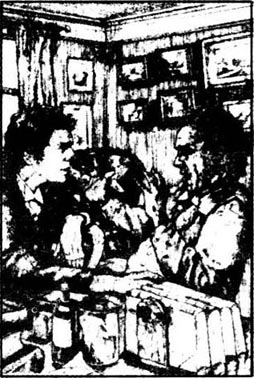
时间一天天过去了，搜寻海德的工作还在继续。丹佛斯·卡鲁爵士是个引人注目的重要人物，警方也竭力想抓住凶手，绳之以法。尽管警方和新闻界找出了很多海德以前的事，但还是没有他的影子。而且没有人说通缉犯的好话。他是个残酷、暴烈的人，生活在邪恶里，充满了仇恨和嫉妒。可是所有这些，没一样对警察有帮助，海德先生就那么销声匿迹了。
光阴流逝，厄特森先生慢慢镇定下来，感到比较安心了。他的确为死去的委托人卡鲁爵士难过，但同时也很高兴海德不见了。杰基尔博士也变得比以前安心、快乐了，他又开始了新生活，回到了人世间。他请朋友到家里做客，也接受朋友们的邀请。他以前就非常仁慈和慷慨，现在还居然成了教堂的常客。他很忙，整天在户外的新鲜空气里呆着，兴高采烈，逍遥自在。有两个月的时间，博士生活得很安宁。
1月8日，厄特森先生应邀去杰基尔博士家赴宴，兰宁医生也在。“又像回到了过去的时光，”律师一边望着博士冲着医生微笑，一边想着。
可到了1月12日，接着14日，杰基尔博士又拒绝会客了。
“博士不舒服，”普尔解释说，“他希望您能原谅他，他谁也不见。”
厄特森先生第二天又去了，随后几天也去了。两个月以来，他几乎天天与老朋友见面，现在律师感到莫名的孤独。第六天晚上，他留助手盖斯特先生吃饭，第七天夜里，他去见了兰宁医生。
兰宁医生倒没有不欢迎他，但看到他的样子，厄特森先生不禁大吃一惊。他以前脸色红润又健康，可现在却灰白、消瘦，而且他的眼睛里透着深深的惊恐。他一下子变成了一个衰老、病危的人。
“他那副样子，”厄特森先生心想，“就像知道自己死期将至一样。”
“怎么了，兰宁？”他问，“你气色不大好。”
“厄特森，我受了次惊吓，”兰宁医生答道，“我活不长了，只有几个星期的时间了。”他顿了顿，又说：“唉，人终有一死，这是迟早的事，不管怎么说，我的一生还算不错。”
“杰基尔也病了，”律师说，“你见过他吗？”
一听到杰基尔的名字，兰宁医生神色大变，举起一只颤抖的手。“我求求你，”他说，“别在我这里提那个名字。”
“哦，天哪！”厄特森先生说。停了好一会儿，他又说道：“兰宁，我们三个做了一辈子朋友，我们老了，不会再有新的朋友了，你难道不能原谅和忘掉他的过失吗？也许我能帮点忙？”
“无济于事。”兰宁回答说，“你问他自己吧。”
“他不让我进门。”
“我也料到了。总有一天，厄特森，等我死了，你会知道事情的真相的。再有，要是愿意坐下来和我说点别的。那就请留下来，就是别提那个人，一想到他，我就难受。”
厄特森先生一回到家，就坐下来给杰基尔博士写信，问他为什么拒绝见自己，为什么和兰宁医生断交了。他收到了回信，信写得又长又令人费解。
“我不责怪咱们的老朋友，”杰基尔博士写道，“但我同意他的看法，我们不能再见面了。还有也请你原谅，从现在起我要过一种与世隔绝的生活。我的门对你关上，是因为我必须独自踏上这条危险而又黑暗的路程。我已经做了错事，并为此受到了惩罚，没人能帮助我。”
“这是怎么回事？”厄特森先生想，“海德已经消失了，杰基尔也恢复了原来的老样子——至少上周还是这样。难道他疯了？”接着他想起了兰宁医生的话。“这里面有问题，”他自言自语道，“有哪儿不对劲，可我猜不出有什么秘密。”
一星期后，兰宁医生卧床不起。又过了两个星期，他就去世了。葬礼过后，厄特森先生回到家，走进自己的办公室，打开锁，从柜子里拿出一个信封，是朋友死后不久他收到的。
是兰宁医生的笔迹，他读道：“加·约·厄特森亲启，私人密件。”律师拿着信封，在手里翻来复去地看着。里面会有什么可怕的消息呢？厄特森先生两手颤抖着拆开了信封，里面还有一个信封，写着：“到亨利·杰基尔博士死亡或失踪时方可拆阅。”
律师简直不敢相信自己的眼睛，“死亡或失踪时”，这个说法和杰基尔博士本人的那份遗嘱上的一模一样。“我理解为什么杰基尔会写这些话，”他自言自语道，“但为什么兰宁写得也是这样的话呢？”有那么一个瞬间，他真想拆开信，马上揭开这些秘密。但他是个非常诚实、正直的律师，不会那么做的。他一定要遵从朋友和委托人的遗愿。他又把这封信锁进柜子里，放在杰基尔博士的遗嘱旁边。
律师为自己的朋友杰基尔博士感到十分担心，甚至为他感到害怕。他又去了博士家，但仍被拒之门外。
“普尔，他还好吗？”有一天他问老仆人。
“不太好，先生。他整天关在实验室楼上的书房里，甚至还睡在那儿。他话很少，总是闷闷不乐的。肯定出了什么事，先生，可他谁也不告诉。”
有好长一段时间，律师几乎天天去看他，但渐渐地，他对朋友拒绝见自己感到心灰意冷了，来访的次数也越来越少了。
6．The face at the window
6
The face at the window
One Sunday soon afterwards Mr Utterson was walking with his friend Enfield when they happened to pass through the narrow side-street again. Enfield pointed to the mysterious door.
'Well,' he said, 'that story is finished. We shall never see Mr Hyde again.'
'I hope you're right,' said the lawyer. 'Did I tell you? I once saw Hyde too and had the same strong feelings of dislike for him as you did. What an evil man!'
'I agree,' said his friend. 'By the way, why didn't you tell me that our mysterious door led to the laboratory at the back of Doctor Jekyll's house? I didn't know then, but I know now.'
'Well, now that you know, let's go into the courtyard and look up at his window. I must tell you, I'm worried about poor Jekyll. Perhaps the sight of a friendly face will do him good.'
Overhead the evening sky was bright, but the courtyard was cool and dark. At an open window of the study above the laboratory, Doctor Jekyll sat, like a prisoner staring at the world outside.
'I hope you are better, Jekyll,' the lawyer called up to him.
The doctor shook his head sadly. 'I'm not well, Utterson,' he said. 'I shall not be here much longer—thank God.'
'You spend too much time indoors! You ought to get out into the fresh air like Enfield and me... By the way, this is my cousin, Mr Enfield... Come now—get your hat and join us for a quick walk.'
'You're very kind,' said the doctor. 'But no, it's quite impossible. I would like to invite you and Mr Enfield inside, but the place is not very tidy...'
'Well then,' said the lawyer gently, 'we can talk to you from here.'
'That's an excellent idea—' began the doctor, with a smile. But suddenly the smile left his face and was replaced by an expression of hopelessness, fear and horror. The two men below saw it, but only for a second, as the window was shut with a bang. The two men looked at each other, then turned and left the courtyard without a word. In silence they crossed the narrow side-street. They did not speak until they came out into a busy, noisy street. Then Mr Utterson at last turned and looked at his companion, whose face was as pale as his own. The expression on Doctor Jekyll's face had upset them both deeply.
'God help him!' whispered Mr Utterson. 'God help the poor man!'
But Mr Enfield only nodded his head very seriously and walked on without a word.
happen to take place, come about by chance. 碰巧做某事。
do him good benefit him. 让他好受点。
courtyard n. an unroofed open space surrounded by walls or buildings. 院子；庭院。
tidy adj. keeping everything in order. 整齐的；干净的。
untidy adj. 杂乱的。
hopelessness n. without hope, feeling no hope. 无助的样子。
窗户上的脸
6 窗户上的脸
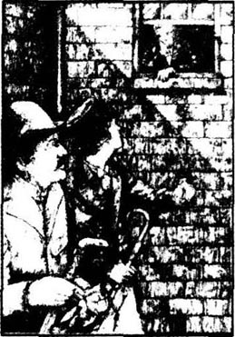
没过多久，在一个星期天，厄特森先生和恩菲尔德一起散步，正巧又一次走过那条狭窄的小街。恩菲尔德指着那扇神秘的门。
“好了，”他说，“那个故事结束了，我们再也不会见到海德先生了。”
“希望你说得对，”律师说，“我有没有告诉过你，有一次我也见到了这个人，而且和你一样对他有种特别的厌恶。他真是个邪恶的家伙！”
“是啊，”朋友说，“对了，你怎么没告诉我那扇门通向杰基尔博士的实验室呢？我以前还不知道，现在才明白。”
“那么，既然你知道了，咱们不妨进院子看看他家的窗户。坦白跟你说，我对可怜的杰基尔很不放心，也许我们友好的面孔会让他好过点。”
抬头看去，夜空是那么明亮，可院子里却那么阴暗，而且凉嗖嗖的。实验室楼上，书房的窗边，坐着杰基尔博士，像个囚犯似的，盯着外面的世界。
“杰基尔！希望你好点了。”律师抬头冲他喊道。
博士忧郁地摇了摇头。“我情况很糟，厄特森，”他说，“我的日子不会长了，感谢上帝！”
“你在屋里关的时间太久了，应该多出来活动活动，像我和恩菲尔德一样……顺便介绍一下，这是我表弟，恩菲尔德先生……来吧！戴上帽子，出来稍微蹓跶一会儿。”
“你真好，”博士说，“但是不行啊！不可能的。我很想请你和恩菲尔德先生进来坐坐，但我这儿有点乱，不像样子……”
“没关系，”律师谦和地说，“我们就在下面和你谈一会儿，这就挺好。”
“好主意——”博士微笑着，可话还没说完，笑容就不见了，换成一脸无助、担心和恐惧的神情。下面的两位都看见了，但只瞥到一眼，窗户就“呼”地一声关上了。两个人对视了一眼，然后一言不发地转身离开了院子。他们默不作声地穿过小街，一直来到熙熙攘攘的大街上，厄特森先生这才转身看了看他的伙伴，俩人的脸色一样苍白。杰基尔博士脸上的表情让他们为他感到深深地难过。
“上帝保佑他！”厄特森先生喃喃说道，“上帝保佑这个可怜人！”
但恩菲尔德先生只是严肃地点了点头，继续走路，一句话也没说。
7．The last night
7
The last night
It was now March, and Mr Utterson was sitting by the fire after dinner, when he was surprised to receive a visit from Doctor Jekyll's servant, Poole. The old man looked pale and frightened.
'Mr Utterson,' he said, 'something is wrong.'
'Sit down by the fire and tell me all about it.'
'The doctor's locked himself up in his study, sir.'
'That's quite usual, surely,' said the lawyer. 'You know your master's habits as well as I do. He often shuts himself away from the world.'
'Yes, but this time it's different. It frightens me, sir—I've been frightened for more than a week now, and I just can't go on any longer.'
He stopped and stared down at the floor.
'Try and tell me, Poole,' said Mr Utterson gently.
'Something terrible is happening to my master. I can't explain. But... please, sir, can you come with me and see for yourself?'
At once Mr Utterson fetched his coat and hat.
'Thank you, sir,' whispered Poole gratefully.
Together they made their way to Doctor Jekyll's house. It was a wild, stormy night. To Mr Utterson the streets seemed strangely empty and lonely. The square, when they reached it, was full of wind and flying dust. The thin trees were blowing wildly, and untidy grey clouds were sailing past a pale, sickly moon.
'Well, sir,' said Poole, 'here we are, and I hope that nothing is wrong.' He knocked softly at the front door. The door was opened just a little and a voice from inside asked, 'Is that you, Poole?'
'Yes—open the door.'
The hall, when they entered, was brightly lit. A good fire was burning. The room was full of people—every servant in the house was there. They looked like a crowd of frightened children.
'What's all this?' said the lawyer. 'What are you all doing here? Your master would not be pleased.'
'They're frightened,' said Poole simply. No one else spoke. A little servant girl began to cry.
'Quiet!' said Poole sharply, trying to control his own fear. 'Now—fetch me a light and we'll finish this business at once. Mr Utterson, sir, please follow me.' He led the way across the back garden towards the laboratory.
'Come as quietly as you can, sir. I want you to hear, but I don't want him to hear you. And sir—if he asks you to go inside—don't go!'
Mr Utterson's heart gave a little jump of fear, but he bravely followed the servant into the laboratory to the bottom of the stairs.
'Wait here, sir—and listen carefully,' whispered Poole. He himself, again controlling his fear, climbed the stairs and knocked on the study door.
'Mr Utterson would like to see you, sir,' he called.
'Tell him I cannot see anyone,' said a voice from inside the study.
'Thank you, sir,' said Poole. He led Mr Utterson back across the garden and into the house. 'Sir,' he said, 'was that my master's voice?'
The lawyer's face was pale. 'It has changed,' he said.
'Changed? You're right,' said Poole. 'I've worked for Doctor Jekyll for twenty years. That was not my master's voice. Someone has murdered my master. Eight days ago we heard his voice for the last time. "Dear God!" he cried—then no more. The voice you heard just now was the voice of his murderer!'
'This is an extraordinary story, my good man,' said Mr Utterson. He tried hard to appear calm. 'If Dr Jekyll has been murdered—why is his murderer still there? What reason could he possibly have for staying?'
'Perhaps you don't believe me, sir, but I know what I heard. For a week now the person—or thing—in that study has been crying night and day for some special chemical powders. My master was in the habit, when he was particularly busy with his scientific work, of writing orders on pieces of paper and leaving them on the stairs. We've had nothing else this week, nothing except written orders and a locked door. I've been to every chemist in town in search of these chemicals of his, but they were never right. They weren't pure enough, he said. I had to take them back to the shop, and try another chemist. I don't know what these chemicals are, but the person in that study wants them terribly badly.'
'Did you keep any of these written orders?' asked Mr Utterson.
Poole reached in his pocket and brought out a note. The lawyer read it carefully. It said: 'I am returning your chemicals, as they are impure and therefore useless. In the year 18—you made up a mixture of chemical powders for Doctor Henry Jekyll. Please search your cupboards for some more of the same mixture and send it to Doctor Jekyll AT ONCE. This is VERY IMPORTANT.'
'This is a strange note,' said Mr Utterson.
'The chemist thought so too, sir,' said Poole. 'When I took him this note, he cried, "All my chemicals are pure, and you can tell your master so!" and he threw the note back at me.'
'Are you sure this is your master's handwriting?' asked Mr Utterson.
'Of course, sir,' said Poole. 'But what does handwriting matter? I've seen my master's murderer!'
'Seen him?' repeated Mr Utterson.
'Yes! It was like this. I came suddenly into the laboratory from the garden. I think he had left the study to look for something. The study door was open and there he was at the far end of the laboratory. He was searching among some old boxes. He looked up when I came in, gave a kind of cry and ran upstairs and into the study. I only saw him for a moment, but my blood seemed to freeze. Sir, if that was my master, why was he wearing a mask over his face? If it was my master, why did he cry out like a trapped animal and run away from me? I've been his servant for twenty years. And then...' Poole paused, and covered his face with his hands, too upset to speak.
'This is all very mysterious,' said Mr Utterson, 'but I think I begin to understand. Your master, Poole, is ill. And the illness has changed his appearance. Perhaps that also explains the change in his voice. It certainly explains the mask and the way he has been avoiding his friends. And of course, he's searching for these chemicals because he believes they will make him well again. Dear God, I hope he's right! Poor Jekyll—that is my explanation. It's sad enough, Poole, but it's normal and natural, and there's nothing to be alarmed about.'
'Sir,' said the servant, 'that... thing was not my master. My master is a tall, fine, well-built man. The stranger was much shorter... Sir, I have been with my master for twenty years and I know his appearance as well as I know my own. No, sir, that thing in the mask was never Doctor Jekyll, and I believe that he—it—murdered my master!'
'Poole,' said the lawyer, 'if you say that, I must make sure. We must break down the study door.'
'You're right, Mr Utterson!' cried the old servant.
'Very well. Will you help me? If we are wrong, I'll make sure that you're not blamed for it.'
'There's an axe in the laboratory,' suggested Poole.
'You realize, Poole,' said Mr Utterson, 'that this may be dangerous for us both? Let us now be honest with each other. This masked figure that you saw—you're certain that it was not your master.'
'That's right, sir.'
'Did you in fact recognize it?'
'Well, sir, it was all so quick that I'm not really sure. But—well, I think it was Mr Hyde. It was short, like Mr Hyde, and it moved in the same light, quick, active way. And who else could come in by the laboratory door from the street? You must remember, sir, that at the time of the Carew murder Mr Hyde still had the laboratory key with him. But that's not all. Mr Utterson, did you ever meet Mr Hyde?'
'Yes,' replied the lawyer. 'I once spoke with him.'
'Then you will know, sir, that there is something strange about Mr Hyde, something evil.'
'I agree with you,' said Mr Utterson. 'I felt something like that, too.'
'Yes, sir. Well, when that thing in the mask jumped out from behind the boxes and ran up the stairs, I had exactly the same feeling. That thing behind the mask was Mr Hyde!'
'I understand, Poole, and I believe you,' said the lawyer slowly. 'And I believe poor Henry Jekyll has been murdered. I believe too that his murderer is still hiding in the study. Now, Poole, let's go and make an end of it.'
Together they went out into the back garden. The clouds had covered the moon and it was now quite dark. As they passed silently by the wall of the laboratory, they stopped and listened. Further away they could hear the everyday noises of a London evening. From the study above them, however, came the sound of footsteps moving backwards and forwards across the floor.
'It walks like that all day, sir,' whispered Poole, 'yes, and most of the night too. It only stops when some more chemicals arrive from the chemist. Ah, sir, listen to that—do you think those are my master's footsteps?'
The short, light steps were indeed very different from Henry Jekyll's long, heavy ones.
'Have you anything else to tell me, Poole?' asked the lawyer heavily.
'Once, ' said Poole, 'I heard it weeping. '
'Weeping?' repeated Mr Utterson in horror.
'Weeping like a lost child,' said the old servant. 'It tore my heart. I felt like weeping too.'
'Well,' said the lawyer, 'we have a job to do.'
They went into the laboratory and climbed the stairs to the study. 'Jekyll,' called the lawyer in a loud voice, 'I must see you.' He paused for a moment, but there was no reply. 'If you refuse to let me in, then I'll break down the door!'
'Utterson,' said a voice from inside the study, 'I beg you to leave me alone!'
'That's not Jekyll's voice!' shouted Mr Utterson. 'It's Hyde's! Break the door down, Poole!'
The axe rose and fell. The door shook and a scream of pure fear, like a trapped animal, rang from the study. Again the axe crashed against the door. But the wood was strong and the lock was well made. At last, however, the door fell inwards upon the carpet.
The two men stared into the study. They saw a warm, comfortable room with a good fire burning in the fireplace and a few papers on the big table. A friendly, homely room. But face down in the middle of the floor there lay the body of a man. The lawyer turned it over on its back and saw the face of Edward Hyde. He was dressed in clothes that were much too large for him, and in his hand he held a small bottle.
The lawyer shook his head. 'He's taken poison, Poole,' he said. 'I fear we've come too late to save Doctor Jekyll, and too late to punish his murderer too. Now we must find your master's body.'
They searched everywhere, but there was no sign of Henry Jekyll, dead or alive.
'Perhaps your master has escaped,' said Mr Utterson hopefully. He went to check the door from the laboratory into the narrow side-street. It was locked, and covered with dust. On the floor nearby he found a broken key.
'It's a long time since anyone opened this door!' said Mr Utterson.
'Yes,' said Poole, picking up the broken key. 'So how did Hyde get in?'
'This is too difficult for me, Poole,' said the lawyer. 'Let's go back to the study.'
They searched the study again. 'Look, sir,' said Poole, pointing to a small bable in the corner. There were bottles of liquid and some white powders lying in saucers. 'He was testing his chemicals here.'
One of the doctor's books was lying on the floor. Its cover was torn off. The lawyer picked it up. Doctor Jekyll loved his books and always took great care of them. But he had written all over this one—the handwriting was unmistakable—before tearing it and throwing it on the floor.
Then the lawyer noticed the tall mirror on the wall between the glass-fronted bookshelves.
'How strange,' said Mr Utterson. 'Why did Jekyll want a mirror in his study?'
Next they turned to the desk and found a large packet addressed to Mr Utterson. The handwriting was Doctor Jekyll's. The lawyer opened the packet and three envelopes fell out on to the floor. The first contained a will. It was like Doctor Jekyll's first will in every way—except one. The doctor had left all his money, not to Edward Hyde, but to Gabriel John Utterson.
The lawyer looked at the will, then at Poole, and finally at the dead man on the floor.
'I just don't understand,' he whispered. 'Hyde has been here all this time—why didn't he destroy this will?'
He picked up the next envelope. It contained a short note in the doctor's handwriting. Mr Utterson saw the date. 'Poole!' he cried, 'this is today's date on the letter. Jekyll was alive here today. He can't be dead—he has run away or is hiding somewhere. And if so, why? If he's alive, can we be sure that Hyde killed himself? We must be careful, Poole, or we may involve your master in some terrible danger.'
'Why don't you read the note, sir?' asked the servant.
'Because I'm afraid,' said the lawyer, in a worried voice. Slowly, he lifted the letter, and read:
My dear Utterson,
If you are reading this, it means that I have disappeared. Please go home and read Lanyon's letter. Afterwards, please read the confession of
Your unfortunate and unhappy friend,
Henry Jekyll
'This must be the confession,' said Mr Utterson to himself, picking up the third and largest envelope. He put it in his pocket. 'Say nothing about these papers, Poole,' he said. 'If your master has died or disappeared, this paper may save his reputation. It's now ten o'clock. I must go home and study these papers in peace and quiet. But I shall come back here before midnight, and then we shall send for the police.'
They went out, locking the laboratory door behind them. With a heavy heart Mr Utterson walked home to read his letters.
upset v. cause sb or sth. to be disturbed, unhappy, sad. 使人难过，悲伤。
whisper v. speak in a very low voice, especially when talking to oneself. 低语；耳语。
pale adj. with little colour in the face. 苍白的；惨白的。
master n. an old-fashioned word for a man employer. 主人；雇主。
make one's way to get to... 去……（但指费了些许力气才到）。
control one's own fear suppress one's feeling of being afraid of sth. 努力控制着自己的恐惧。
Mr. Utterson's heart gave a little jump of fear. 厄特森先生的心吓得一紧。
carefully adv. paying attention to, taking care. 仔细地，小心地。
extraordinary adj. remarkable, outstanding, special. 非常的；特别的；非凡的。
chemical adj. liquid or solid things used in or made by chemistry. 化学的。
powder n. substance that has been crushed, ground. 粉末。
be in the habit have often and regular practice. 是老习惯了。
particularly adv. especially. 尤其地；特别地。
chemist n. a person who makes and sells drugs and medicines. 化学家；药剂师。
pure adj. clean, unmixed with any other substance. 纯净的；质地纯的。
impure adj. not pure. 不纯的。
mixture n. the result when different things are mixed together. 混合；混合物。
look for search. 寻找。
mask n. a cover worn over the face to hide it. 面具；面罩。
trap v. capture by a trick. 诱捕；用陷阱捕捉。
run away escape. 逃跑。
alarm v. give a warning or feeling of danger to; cause anxiety to. 报警；引起注意；让人担心。
break down open with force. 破门而入；打开。
blame v. fix on sb. the responsibility for sth. 抱怨。
axe n. a heavy stick with a sharp piece of metal on the end, used for cutting down trees. 斧子。
make an end of sth to finish or solve sth. 去了结某事。
footsteps n. (sound of a) step of sb. walking. 脚步声。
weep v. cry; let tears fall from the eyes. 哭泣；流泪。
leave me alone not interfere with me. 让我一个人呆着。
crash strike violently and noisily. 用力碰撞。
turn over completely upset. 翻转过来。
poison n. a strong feeling of hate, love or anger. 毒药；恶意，仇恨。
broken adj. forcibly separated into two or more pieces. 断了的；弄断的。
liquid n. anything that flows and is not a gas. 液体。
saucer n. small curved dish on which a cup stands. 碟子；盘子。
be torn off to be out of place by pulling sharply. 撕掉的。
unmistakable adj. can not be mistaken. 不会弄错的。
notice v. observe, arrest one's attention. 注意到。n. attention; news of sth. about to happen 注意力，通知。
bookshelf n. bookcase. 书架。
packet n. small parcel or bundle. 包；包裹；一小捆。
leave sth. to sb. have at the time of one's death; bequeath by will. 留给某人……东西。
destroy v. break to pieces. 破坏。
confession n. saying or admitting (that one has done wrong); acknowledging. 忏悔；自白；招供。
unfortunate adj. unlucky. 不幸运的；倒霉的。
send for ask sb. to come; fetch sb. 派人去叫，去找。
最后一夜
7 最后一夜
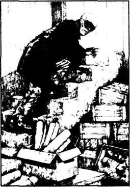
转眼到了三月份，一天晚饭后，厄特森先生坐在炉火边，一脸惊讶之色，因为来了一位客人，是杰基尔博士的仆人普尔。老人家看上去面无人色，充满了恐惧。
“厄特森先生，”他说，“出事了。”
“来，坐到火边，慢慢说。”
“博士把自己锁在书房里，不出来了，先生。”
“这不是常事吗？”律师说，“你和我一样清楚你的主人的习惯，他不是经常把自己锁起来吗？”
“是，可是这次不一样，太可怕了，先生，有一个星期了，我再也受不了啦。”
他停下来，低头盯着地板。
“来吧，普尔，告诉我是怎么一回事。”律师轻轻地说道。
“主人遇到了可怕的事，我说不清楚，可是……求求您先生，能跟我一起去亲自瞧瞧吗？”
厄特森先生立刻拿来自己的大衣，戴上帽子。
“谢谢，先生。”普尔满心感激地嘟哝着。
他们动身去杰基尔博士的家。那是个狂风呼啸、风雨交加的晚上，厄特森先生感到街上异常地空旷和孤独。到了广场附近，风沙飞扬，细小的树木猛烈地摇摆着，乱七八糟、奇形怪状的黑云飘过苍白、昏暗的月亮。
“先生，”普尔说，“我们到了，但愿没出乱子。”他小心翼翼地敲了敲前门，门开了一道缝，里面传出来一个声音：“是你吗，普尔？”
“没错，开门吧。”
他们走进大厅，里面灯火通明，火烧得很旺，屋里挤满了人——所有的仆人都在，好像一群吓坏了的孩子。
“这究竟是怎么回事？”律师问，“你们都在这儿干什么？主人是会不高兴的。”
“他们都害怕。”普尔轻声说。没人说话，一个小女仆抑制不住，哭出声来。
“安静！”普尔提高嗓门喊了一声，努力把自己的恐惧压下去。“去，拿枝蜡烛来，我们马上把这事弄个水落石出。厄特森先生，请跟在我后面。”他在前面引路，穿过后花园朝实验室走去。
“先生，请您把脚步放轻点，我想让您听听，但您可别让他听见了。先生，要是他让您进去，千万别进去！”
厄特森先生吓得心中一紧，但他马上鼓起勇气，跟着仆人进了实验室，来到楼梯下。
“在这儿等着，先生，仔细听着。”普尔低声说。而他自己抑制住恐惧，上了楼梯，敲了敲书房的门。
“先生，厄特森先生想见您。”他叫道。
“告诉他，我不能见任何人。”书房里传出一个声音。
“谢谢您，先生。”普尔说完，又领着厄特森先生穿过花园回到屋里。“先生，”他问，“那是我主人的声音吗？”
“好像有点变了……”律师说，脸色发白。
“变了？您说得没错，”普尔说，“我服侍了杰基尔博士20年，那根本不是主人的声音。主人已经给人害死了。八天前我最后一次听见他的声音。‘哦！亲爱的主啊！’他喊了一声，然后就再没有声音了。您刚才听到的是凶手的声音！”
“这事太不寻常了，好普尔，”厄特森先生说，尽量让自己保持冷静。“如果杰基尔博士给人害死了，为什么凶手还在这儿？是什么原因让他留在这里呢？”
“好吧，先生，也许您不信我的话，但我明白我听见了什么。快一个星期了，那个人，也许是什么怪物，在书房里没日没夜哭喊着要一种特别的药粉。主人每次一忙，就是这样，把命令写在纸条上，扔在楼梯上，这倒是他一贯的作风。这次也是，我们别的什么也不知道，只有吩咐的纸条和关紧的门。我去过城里所有的药店，找他要的东西，可没一样符合他的要求。他说那些玩意不纯，我又得把东西退回去，再上别的店。我不知道这些药是干什么的，可书房里的那个人要得那么急。”
“你有他写的这种纸条吗？”厄特森先生问道。
普尔把手伸进口袋，掏出一张纸。律师凑近仔细看了看，上面写道：“现将刚购的那批货退还，质地不纯，不合用途。18××年，您曾给亨利·杰基尔博士配过一批药剂，恭请贵号尽量搜寻，若有任何相同药剂存货请立即送来。至关重要，切记，切记。”
“真是个奇怪的条子！”厄特森先生说。
“药剂师也这么认为，先生，”普尔说着，“我给他这个条子，他嚷嚷着说：‘我所有的药品都是纯的，就这么告诉你们主人！’他说着就冲我把纸条扔了回来。”
“你能肯定这是主人的笔迹吗？”厄特森先生问。
“当然了，先生，”普尔说，“可这又有什么关系呢？我看见了凶手！”
“看见他了？”厄特森先生不禁重复了一遍。
“就是看见了嘛！是这样的，有一次我从花园突然去了实验室，我以为他离开书房找什么东西去了，书房的门开着，他就在实验室最里面，在旧箱子里翻什么东西。我进去时他抬头看了我一眼，大叫一声，转身就奔到书房里去了。我只看到他一眼，可血都要冻住了似的。先生，您说要是主人的话，他干吗脸上戴着面罩？要是主人的话，干吗像个四处被追的野兽，从我跟前逃走？我给他当了20年的仆人，可他……”普尔将脸埋在手里，难过得说不下去了。
“的确是桩怪事。”厄特森先生说，“但我想我有点明白了。普尔，你的主人看来是病了，长相也变了，嗓音也变了，这样就能解释为什么他戴面罩了，因为他不愿见朋友；当然了，他拼命地找药，是因为他认为吃了药就会好了。上帝啊！希望他一切都好！哦！可怜的杰基尔！这是我的解释，想起来怪怕人的，但还算正常，也还算自然，不必那么担心。”
“可是，先生，”仆人说，“那个……东西，不是主人。主人是个大高个，又体面又英俊，那个人矮得多……先生，我和主人在一起20年了，还会不记得主人长得什么样？除非我不知道自己长什么样了！不，先生，面罩下的那个东西绝不会是杰基尔博士，而且我认定，就是——它——杀了主人！”
“普尔，”律师说，“你要是这么说，我一定要弄个水落石出了。咱们得把门撞开。”
“这才对啊！厄特森先生！”老仆人大声说道。
“很好。那么你愿意帮助我吗？万一弄错了，我不会让你受责备的。”
“实验室里有把斧子。”普尔建议说。
“普尔，你知道，”厄特森先生说，“这事对咱们俩都够危险的。咱们有话直说，你见到的那个戴面罩的人，你敢肯定不是你的主人。”
“是的，先生。”
“你确实能认出他吗？”
“嗯，先生，时间太短，他跑得很快，不敢真的确定。但是——直说吧，我想那是海德先生。个子和他一样矮，动作一样轻快、敏捷，再有，除了他，谁还能从街上通过实验室的门进来呢？您别忘了，先生，卡鲁凶杀案发生时，钥匙还在海德先生手里呢！这还不算。对了，先生，您见过这个海德先生吗？”
“见过，”律师说，“我跟他说过一次话。”
“那您也该清楚，海德先生有点奇怪，他身上有种邪恶的东西。”
“我同意你说的，”厄特森先生说，“我和你感觉差不多。”
“是这样嘛！面罩下的那个东西从箱子后面跳出来，跑上楼梯，当时我就是那种感觉，觉得面罩下的那个人一定是海德先生！”
“我知道了，普尔，我相信你，”律师一字一顿地说道，“我相信可怜的亨利·杰基尔已经给人害死了，我也确信凶手还在书房里藏着。现在，普尔，咱们就去了结这事。”
他们一起走进后花园，乌云遮住了月亮，周围一片幽暗，两人静悄悄地沿着实验室的墙走过去，停住脚，听了一会儿，远处传来伦敦城天天晚上的吵闹声，但上面的书房里只有徘徊的脚步声，打破了周围的寂静。
“他整天就这么走，先生。”普尔低声说，“哎，大半夜就这么走来走去的，只有新药品送来了，脚步声才会停下来。您听，先生，那是主人的脚步声吗？”
这脚步声又轻，又短，确实和亨利·杰基尔又长、又重的步子很不一样。
“还有什么其他情况吗，普尔？”律师沉重地问道。
“有一次，”普尔说，“我听见他在哭。”
“哭？”厄特森一脸恐怖地重复道。
“哭得像个迷路的孩子，”老仆人说，“我听了直心碎，也特别想哭。”
“行了，”律师说，“咱们还有事要干。”
他们进了实验室，沿着楼梯向书房走去。“杰基尔，”律师大声喊起来，“我要见你！”他停了一会儿，没人回答。“你要是不让我进去，我可就破门而入了！”
“厄特森，”里面传出一个声音，“求求你，让我自己呆着吧！”
“这不是杰基尔的声音！”厄特森先生大喊一声，“这是海德！普尔，砸门！”
手起斧落，房门震了震，屋里传来恐惧的尖叫声，就像野兽被夹住了腿。门上又落了一斧，但上好的木头很结实，锁也打制得很坚固，最后好不容易，门才落在屋里的地毯上。
两人向屋里瞪眼望去，壁炉里的火很旺，又暖和又舒服，一张大桌子上散着几张纸，这是一间又朴素又温馨的屋子。可是屋中间的地板上卧着一具尸体，律师把他扳过来，是爱德华·海德的脸。他穿着比他个儿大得多的衣服，手里捏着一个小瓶子。
律师摇摇头。“他吃了毒药，普尔。恐怕咱们还是来晚了，没法救杰基尔博士，也不可能惩罚凶手了。现在咱们得找到主人的尸体。”
他们找遍了，可就是没有杰基尔的影子，不管是死的，还是活的。
“也许他早逃走了！”厄特森先生充满希望地说。他转身去查看从实验室通往小街的那扇门。门上了锁，到处是灰尘，旁边地上，他找到了一把折断的钥匙。
“好久没人开过这扇门了！”厄特森先生说。
“是啊，”普尔一边答道，一边捡起折断的钥匙。“那么，海德是怎么进来的呢？”
“这真叫我摸不着头脑了，普尔，”律师说，“咱们再回书房看看。”
他们又在书房找了一遍。“先生，你看，”普尔指着屋角的小桌子，上面摆着盛着各种各样液体的小瓶子，碟子里有些白色粉末。“他在这儿实验这些药品。”
地上扔着博士的一本书，封皮已破烂不堪。律师把书捡起来。杰基尔博士一直很爱看书，也爱惜书，可这本书在没有被撕坏和扔到地上之前，上面写满了字，笔迹也没错。
随后律师又注意到两个玻璃书柜之间的墙上，镶着一面又高又大的镜子。
“真奇怪，”厄特森先生说，“杰基尔在书房里放这东西有什么用？”
他们又转身去看书桌，发现有一个大邮包，上面写着“厄特森先生收”，笔迹是杰基尔博士的。律师打开邮包，里面掉出三封信。第一封是遗嘱，和博士的第一份遗嘱一模一样，只有一条除外，博士把所有积蓄不是给了爱德华·海德，而是给了加布里埃尔·约翰·厄特森。
律师看了看遗嘱，又看了看普尔，最后把目光投向地板上的尸体。
“我还是不明白，”他喃喃说道，“海德一直呆在这儿——可他怎么没有把这份遗嘱毁掉呢？”
他又拿起另一个信封，是博士手写的短笺，厄特森先生看了看日期。“普尔！”他叫道，“是今天的日期，杰基尔今天还活着，他肯定没有死——一定是逃跑了，要不就是躲起来了。真是那样的话，那又为什么呢？如果他还活着，我们能肯定海德是自杀的吗？普尔，咱们得小心行事，否则可能会把你的主人拖到什么惨祸里去的！”
“您为什么不念下去，先生？”仆人问。
“我害怕，”律师心事重重地说，然后他慢慢地拾起了信，念道：
“我亲爱的厄特森：
当您看到这张纸条的时候，这意味着我已经失踪了。请您回去看看兰宁医生的信。之后，请您再读我的忏悔书。
您的不幸而痛苦的朋友
亨利·杰基尔”
厄特森先生拾起第三封信，那是个最大的信封，厄特森自言自语说：“这一定是忏悔书了。”他把信放进口袋，说：“普尔，别跟别人说起信的事，要是主人死了或者失踪了，这些东西也许能挽救他的名誉。10点了，我要回家去安安静静地读信，午夜之前我一定赶回来，那时我们再派人去报警。”
他们一同出来，锁上了实验室的门。厄特森先生心情沉重地回家去看这些信。
8．Doctor Lanyon's letter
8
Doctor Lanyon's letter
Dear Utterson,
Four days ago, on the 9th of January, I received a letter by the evening post. It was in the handwriting of my old friend Henry Jekyll. I was rather surprised, as we were not in the habit of writing to each other, and I had had dinner with him the night before. When I came to read the letter, I was even more surprised. The letter said:
Dear Lanyon,
You are one of my oldest friends. Although we have sometimes disagreed on scientific matters, I have always remained your friend. I would do anything for you, Lanyon—please will you do something for me now?
Please, old friend, come to my house at once with this letter in your hand. Poole, my servant, has his orders. He will be here with a locksmith. Break the lock of my study door, and then you must go in there alone. Open the glass-fronted cupboard on the left-hand side and look on the fourth shelf from the top. On it you will find some packets of chemical powders, a small bottle and a book. Please take everything back to your house.
If you leave as soon as you receive this letter, you should be back home before midnight. At that time you will receive a visit from a man. Please give him the bottle, the powders and the book, and I shall always be grateful to you.
Do not fail me, Lanyon. Believe me, my life and my peace of mind depend on you. I am in fearful danger and only you can save me.
Your friend,
Henry Jekyll
After reading this letter, I was sure that Doctor Jekyll was mad. But a friend is a friend, and so I went at once to his house. Jekyll's servant had received by the same post a letter similar to mine, and he was waiting for me with the locksmith. Together we went through the old laboratory and climbed the stairs to the doctor's private study. The door was very strong, with an excellent lock, but the locksmith knew his job. Soon the door stood open and I entered the study. I opened the cupboard and found the shelf. Sure enough, the powders, the bottle and the book were there, and I look them home with me.
At home I looked at everything more carefully. There were several packets of white powder and a bottle of red, strong-smelling liquid. The book contained nothing except a list of dates, going back several years. The last date was nearly a year ago. Here and there the doctor had added a few words. The word 'double' appeared very early in the list, followed by the word 'Failed! !'. 'Double' appeared in the list several more times... What was Jekyll doing? The book looked like a list of unsuccessful experiments. How could I, by taking these things to my house, save my friend's life and peace of mind? And what was the reason for this midnight visitor? I put my old gun in my pocket, then I put everything in a box for my midnight visitor to collect.
At midnight exactly there was a knock on my door. A short man was standing in the shadows.
'Are you from Doctor Jekyll?' I asked. He bent his head. Although I could not see his face, there was something unpleasing about him and I was glad I had a weapon. I invited him into the house and there, in the bright light, I took a closer look at him.
His appearance was extremely strange. His clothes were well made and expensive, but they were far too large for him. He looked like a child wearing his father's clothes, but there was nothing childlike about this man. He was short, as I have said, but very strong. At the same time there was a look of sickness and horror about him, and his face was a mask of pain, violence and hate. As a doctor I could perhaps feel sorry for him; as a man I felt only fear and dislike.
'Have you got it?' said the stranger impatiently, reaching out his hand and touching my arm. His touch made my blood run cold. I shook off his hand. 'Come, sir,' I said calmly. 'Sit down and introduce yourself.'
'I apologize, Doctor Lanyon,' the stranger said more politely. 'Doctor Henry Jekyll sent me here on an important matter. I have to collect something from you.'
I gave him the box. He took it with trembling hands. 'At last!' he cried. He turned to me. His face was deathly pale. 'Have you a medicine glass?' he asked.
I gave it to him. He put a little of the red liquid in the glass and added a packet of powder. A small cloud of smoke rose from the glass and the colour of the liquid changed from red to purple, and from purple to a watery green. The stranger put the glass down on the table and looked sharply at me.
'And now,' he said, 'choose carefully. You can leave the room now. Or you can stay and experience something new, something unknown to science. You can be rich, famous and successful, if only you will believe.'
'Sir,' I said, trying to remain calm, 'I don't understand what you're trying to say, and I think you are probably mad. But I will stay.'
'Very well,' said the stranger. 'Now remember your promise. You've been an unbeliever all your life. You laughed at Doctor Jekyll's ideas and called them unscientific rubbish—now see for yourself!'
He put the glass to his lips and drank the liquid. His whole body shook and jumped and he almost fell. He held onto the edge of the table, breathing fast through his open mouth. As I watched, his whole body seemed to change. He seemed to become taller, fatter—his face turned black and its shape began to change... The next moment I jumped back against the wall, trembling with fear and horror. There before my eyes, pale and shaken and sick, stood Henry Jekyll!
I cannot make myself write down the things that Jekyll, with tears in his eyes, confessed to me that night.
Now fear and horror are my only companions. Sleep has left me and I feel that I have not long to live. As I write, I wonder. Did I imagine it all? As a scientist I cannot believe it—but I saw it happen with my own eyes.
I will say just one thing more, Utterson. The evil thing that came into my house that night—as Jekyll told me—was known by the name of Hyde, and was wanted by the police for the murder of Sir Danvers Carew.
Hastie Lanyon
With fear in his heart, Mr Utterson put away Doctor Lanyon's letter, and then opened the confession of Doctor Henry Jekyll.
locksmith n. worker in making locks. 锁匠。
Don't fail me Don't make me disappointed. 别让我失望，落空。
similar adj. alike. 相似的；同样的。
enter v. go into. 走进。
double of two. 双的；两个。
experiment n. a scientific test on sth. in order to find out what happens and to learn sth. new. 实验；试验。
bend v. bow or stoop. 弯下；低下。
expensive adj. costly. 昂贵的。
shake off get rid of. 甩掉。
apologize v. say sorry to sb. 道歉。
purple n. colour of red and blue mixed together. 紫色。
laugh at make fun of. 嘲笑某人，某事。
shake v. move from side to side, up and down, etc. 摇摆；摇动。
兰宁医生的信
8 兰宁医生的信
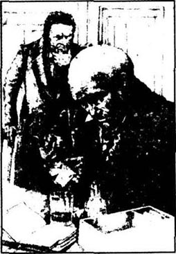
亲爱的厄特森：
四天前，也就是1月9日，晚班邮差送来一封信，是老朋友亨利·杰基尔的笔迹。我很奇怪，因为我们没有互相写信的习惯，况且头一天晚上我还和他一起吃过饭，而信的内容更让我奇怪了。信是这么写的：
亲爱的兰宁：
你是我交情最久的朋友之一，尽管在一些科学问题上我们有分歧，我一直把你当朋友看。我愿意为你赴汤蹈火，兰宁，你也愿意帮我做点事吗？
我请求你，老朋友，立刻拿着这封信到我家里来。我已经吩咐过我的仆人普尔，让他找一个锁匠在这儿等着。你们撬开书房的门，但你必须一个人进去，打开左手的玻璃柜，从上面数第四格里，有一些药品包在纸包里，有一个小瓶子，还有一个本子。把这些东西全都拿到你家里去。
如果你收到信尽快赶来，那你午夜前应该已经回到家了。会有一个人去找你，请你把瓶子、药品和书给他，我将感激不尽！
别让我失望，兰宁。相信我，我的性命和内心的平静全靠你了。我处境危急，只有你能救我了。
你的朋友
亨利·杰基尔
读完这封信，我完全相信杰基尔博士已经神智不清了。可朋友终归是朋友，所以我立刻去了他家。杰基尔的仆人也收到了邮差送来的信，和我的差不多，锁匠已经在那儿等着了。我们一起穿过实验室，上楼来到了博士的私人书房。门很结实，锁也很牢，但锁匠知道怎么办。不一会儿，门开了，我走进去，打开柜子，找到了那一格。没错，药粉、瓶子，还有本子都在那儿，我拿着就回家了。
回到家里，我又仔细查看了一遍。有几包白色的药粉和一瓶红色的液体，气味刺鼻。本子里除了一串日期什么都没有，都是几年前的，最近的一个日子也几乎是一年以前的了。有些日期旁，博士加了很短的批语：“双份”，而且在本子上出现得很早，跟着是“失败！”在这串日期上，“双份”又出现了好几次……杰基尔究竟在干什么？本子上列的单子像一连串失败的实验记录。把这些东西拿回来，怎么就能挽救朋友的性命，还给他带来内心的平静呢？午夜来客又是什么原因？我把常用的一把手枪放到口袋里，把那些东西放到盒子里，等着半夜上门的人来取。
正好午夜时分，有人敲响了我的门，一个小个子站在阴影里。
“是从杰基尔博士那儿来的吗？”我问。他低着头。虽然看不清他的模样，可我还是感到他哪儿有点让人不舒服。真庆幸我拿了枪。我请他进了屋，在明亮的光线下，我仔细看了看他。
他的外表十分怪异。衣服都是上等料子，做工精良，但穿在他身上太显大了，好比孩子穿了爸爸的衣服。但是这人没有一点像孩子。他个子不高，正如我说的，但却十分强壮，还有，他看上去很难受，很害怕，脸被痛苦、不安和仇恨笼罩着。作为医生，我也许为他难过，但作为一个普通人，我只有恐惧和厌恶。
“东西都找到了吗？”陌生人很不耐烦地说着，伸出手就摇我的胳膊。这一碰让我的血都快冻住了。我甩开他的手。“嗨，先生，”我不动声色地说，“请坐，我还未有幸认识您呢！”
“请您原谅，兰宁医生，”陌生人一下子谦恭起来，“杰基尔博士让我来办一件很重要的事，我必须从您这儿拿点东西。”
我把盒子递给他，他两只手颤抖着接过去。“终于拿到了！”他叫了一声，又转向我，脸色像死人一样苍白。“有量杯吗？”他问。
我拿给他。他在杯子里倒出少量药水，又放入一点儿白色药粉，一小股烟冒了出来，液体的颜色也由红变紫，由紫变成水绿。陌生人把杯子放在桌上，突然狠狠瞪了我一眼。
“好吧，”他说，“仔细选择一下吧。您可以马上离开这间屋子，也可以呆在这里，看看一种新奇的东西，一种科学上未知的东西。您可以变得富有、成功、有名望，只要相信就行。”
“先生，”我说，尽量保持冷静，“我不明白您想说些什么，而且我相信您可能神智不清，不过我还是决定留下来。”
“好的，”陌生人说，“记住你的承诺。你一生都不肯相信，还嘲笑杰基尔博士的观点，称它们是不科学的垃圾，现在，你请看吧！”
说着，他把杯子搁在嘴边，一口气喝了下去，接着他的整个身体颤抖起来，踉踉跄跄，几乎都要摔倒了。他抓着桌子边，嘴张得大大的，使劲喘着气。我注视着这一切，他的身体好像变了，变得高了，胖了，脸突然发黑，五官也开始变形……我“噌”地往后退了一步，抵着墙，全身抖成一团，又担心，又害怕，因为站在我面前、脸色苍白、浑身战栗、难受不止的，正是亨利·杰基尔！
那天晚上，杰基尔流着眼泪向我忏悔了一切，可是我实在没法打起精神来，把这些都写下来。
现在，恐惧是我唯一的伙伴，睡梦也离我而去。我觉得我的日子没多久了。一边写，我一边纳闷，难道一切都是幻觉吗？作为科学家，我无法相信，但这确确实实是我亲眼看到的。
厄特森，我再告诉你一件事，那晚来我家的那个邪恶的家伙，杰基尔告诉我，就是那个杀害了卡鲁爵士的通缉犯，名字叫海德！
黑斯蒂·兰宁
厄特森先生满怀恐惧地放下了兰宁医生的信，然后打开了亨利·杰基尔博士的忏悔书。
9．Doctor Jekyll's confession
9
Doctor Jekyll's confession
I was born in the year 18—. I inherited a large fortune, a strong healthy body and an excellent mind. I was naturally hard-working and soon I was extremely successful in my chosen work as a scientist. Although I was still young, important people came to me for advice. At an age when most young men are going out and having fun, I was behaving like a grey-haired old man.
This was not easy for me. The outside world saw a serious, hard-working doctor. Behind this quiet character, however, was an active, fun-loving young man-about-town. This, of course, was nothing to be ashamed of, but I did not realize that at the time. I was ashamed, and I soon learned to keep my two lives separate.
I was not dishonest in any way. Both these people were me. The serious, successful young doctor was me, and the wild, fun-loving, irresponsible young man was me too. I thought about this for a long time and slowly I realized that I was not extraordinary in this. Every man has two sides to his character. He is two people. They live together—often uncomfortably—in the same body.
'How fantastic,' I thought, 'if I could separate these two characters and give my fun-loving side his freedom. Then he could go out and enjoy himself unashamedly and leave serious, studious Doctor Jekyll to get on with his important, life-saving work.'
'Was it possible,' I wondered, 'to find a drug that could give each side of my character its own separate face and body?'
After much thought and careful study I believed I had found the answer. I had read many scientific books and spent many hours in my laboratory, searching for the right mixture of chemicals to make my drug. At last I had everything I needed except a special kind of salt. I bought some from a chemist, and then I was ready.
I hesitated for a long time before I began my experiment. Only a small mistake in the mixture of the drug could mean immediate death. But in the end, my wish to know was stronger than my fear. And so, late one disastrous night, I mixed everything together and prepared my drug. I watched the smoke rising from the liquid as it changed colour from red to purple and at last to green. Then, bravely, I drank every bitter drop.
I felt a violent sickness in my stomach and a terrible pain in all my bones. The room seemed to turn round and round and I trembled with fear. Then the fear and pain disappeared and a strange, sweet feeling took its place. Wild thoughts danced through my mind. They were not good, serious thoughts. They were the wild passions of an evil and cruel stranger. But inside myself I felt younger, lighter, more carefree than ever before. 'If this is pure evil,' I thought, 'I like it.'
I stood there, enjoying these strange new thoughts and passions—and suddenly realized that I was shorter. At that time there was no mirror in my study. Later I put one on the wall of my study so that I could watch these changes in my appearance. Now; however, it was three o'clock in the morning and all the servants were asleep. I decided it was safe to go to my bedroom in my new body and take a look at myself in the mirror there. I crossed the garden and entered my house like a stranger. As I came into my room, I saw Edward Hyde for the first time.
At that time, the good side of my character was stronger than the evil side. Henry Jekyll had his faults, but he was mostly a good, kind man. I cannot be sure, but I believe that is the reason why Edward Hyde was so much smaller than Henry Jekyll. But that was not the only difference between the two men. Henry Jekyll had a kind, open, honest face. Pure evil stared out of Edward Hyde's eyes. I felt no dislike, however. Indeed, I welcomed him. Edward Hyde was me, young and strong and full of life.
Later, however, I noticed that Hyde's appearance and manner had a strong effect on other people. Nobody could meet Edward Hyde without a feeling of dislike and horror. I believe I understand the reason for this too. Everyone is a mixture of good and evil. Even the worst criminal has a little good in him. Only Edward Hyde was pure evil.
I stood for a long time, staring at the mirror. 'Am I trapped?' I wondered. 'If I am, I must leave this house before daylight. If I don't, I shall be arrested as a thief.'
I hurried back to my study. With trembling hands I mixed another dose of the drug and drank it. Again I felt that terrible pain and sickness, but a few seconds later I found myself with the face and body and character of Henry Jekyll once more.
I blame myself for the things that happened later. It was not the fault of the drug. That was neither good nor evil. But it opened the prison doors and allowed Edward Hyde to escape. Soon he was out of control. He, you will remember, was wholly evil. Doctor Jekyll was not wholly good, however. He was a normal man with normal faults and weaknesses, and Hyde was too strong for him.
I welcomed Hyde, therefore. I arranged everything very carefully. I bought a flat in a poor part of London, where I kept Hyde's clothes and employed a servant to do the house work. I took a dose of the drug whenever I wanted to forget my old, quiet, serious self for a time. In those early days—God forgive me! —I thought it was all very amusing. Doctor Jekyll was well known. Nobody knew Hyde, however, and in his body I was free to do as I wished.
I will not go into details about my adventures and shameful acts as Hyde. Jekyll remained as good and kind as ever and always did his best to undo the harm that Hyde did. But as time went by, Jekyll became less and less able to control Hyde.
One night Hyde injured a child in the street and a passer-by saw him. That passer-by was your cousin. I recognized him when the two of you came to my window. Your cousin caught Hyde and an angry crowd collected. They asked for money for the child's family. In the end, in order to escape, Hyde had to give your cousin a cheque in the name of Jekyll.
I learned my lesson from this, and opened a new bank account in the name of Hyde. I even gave Hyde a different handwriting. I was sure I was safe—but I was wrong.
Two months before the murder of Sir Danvers Carew I went out on one of my evil adventures. Before I went to bed, I took a dose of the drug and became Doctor Jekyll once more. I woke up in bed the next morning with a strange feeling that something was wrong... I looked around the room, then down at my hand. Henry Jekyll's hand was large, white, and well-made, but the hand I saw that morning on the bedcover was thin, bony, greyish-brown, and hairy. It was the hand of Edward Hyde.
Sick with horror, I stared at it. 'I was Henry Jekyll when I went to bed,' I thought. 'And now I am Edward Hyde... What possible explanation can there be? And, more important, how can I get to my study and take the drug?'
Then I realized that the servants were quite used to the comings and goings of Hyde. I put on Hyde's clothes and marched confidently through the house. Poole stared in surprise to see Mr Hyde so early in the morning, but I did not care. Ten minutes later Doctor Jekyll had returned to his own shape and was sitting down, pretending to eat breakfast.
Too worried to eat, I sat there thinking hard about my situation. I realized that in recent weeks Hyde had become bigger and stronger, both in body and character.
'What will I do,' I thought, 'if Hyde takes control?' I thought about the drug. Once, in the early days, it had failed completely, and sometimes I had had to take a double dose before I changed into Hyde. Now, however, it was quite easy to become Hyde—the problem was to become Jekyll again after my adventures. My good self and my evil self were fighting for my mind and body—and my evil self was winning.
I knew I had to choose between the two, and I chose Doctor Jekyll. Perhaps I was not wholly serious about this, however, because I did not sell Hyde's flat or destroy his clothes. For two months I lived the life of a quiet and responsible man. But soon I began to miss Hyde—his strong young body, his love of life and his dark adventures in the narrow, nameless streets of London. One night, when my life as Jekyll seemed impossibly dull and boring, I mixed a dose of the drug and drank it.
It was like opening the door of a cage and letting a wild animal escape. That night I became a madman, and beat Sir Danvers to death—for no reason at all. I felt only a wild delight as I hit his body again and again. Afterwards I ran to the flat and destroyed all my papers. I was not ashamed of my crime. Instead I was filled with a high, sweet excitement. I relived the murder as I walked back home through the streets. I felt strong and masterful... Edward Hyde had a song on his lips as he mixed a dose of the drug. 'Your very good health, Sir Danvers!' he laughed as he drank. A moment of terrible pain, then poor Henry Jekyll fell to his knees and begged God to forgive him.
When I was myself again, I locked the door that led from the street to my laboratory. I broke the key and threw it away. 'Goodbye for ever, Mr Hyde!' I whispered.
The next day the news of the murder was all over London. The servant girl had seen the crime and recognized Mr Hyde. My other self was wanted by the police.
In some ways I was glad. Now Hyde could not show his face to the world again. If he did, every honest man in London would be proud to report him to the police.
Once again I led a busy, responsible and almost happy life... until one fine, clear January day. I was sitting on a seat in the park, enjoying the sunshine, when suddenly I felt deathly sick. I began to tremble all over. Soon, however, I felt well again—not only well, but young, strong and fearless. I looked down; my clothes were suddenly too big, the hand on my knee was the bony, hairy hand of Edward Hyde. It was so sudden. One moment I was a famous and popular doctor, the next I was a violent criminal who was wanted for murder.
How could I get to my study to take the drug? I had locked the street door to my laboratory and broken the key. I could not, therefore, enter from the street. I could not go in through the house because of the servants. I needed help from outside. I thought of Lanyon, but how could I reach him? And how could I persuade him to let Hyde into his home? How, too, could I persuade him to break into Doctor Jekyll's private study? It looked impossible.
Then I remembered. My appearance was unrecognizable, but my handwriting was unchanged. I could still write a letter in Doctor Jekyll's name! Calling a passing taxicab, I ordered the driver to drive to a hotel quite near Lanyon's house. Of course Jekyll's clothes were much too large for my body, and I had trouble in climbing into the cab. The driver noticed my strange appearance and could not help laughing. I gave him such a black look, however, that the smile froze on his face. In my desperate fear and danger, I was like a pain-maddened animal, ready to kill or wound at any moment. I wanted to pull the driver from his seat and murder him then and there. But I was clever too. My life depended on my coolness, and I fought to control my murderous passions.
We reached the hotel. I paid the driver and went inside, holding up my too-large trousers. The servants smiled when they saw my strange appearance. I stared angrily at them and their smiles disappeared at once. I gave my orders and they led me to a private room and brought me some writing paper and a pen.
Hyde in danger of his life was a new experience for me. He—I write 'he' because I find it hard to write 'I'—he was not human. His only feelings at that time were fear and hate. Hyde was wholly evil, but he was not stupid. He knew that his life depended on two letters, one to Lanyon and one to Poole. If he failed, he would die.
Carefully he wrote the letters and sent a servant to post them. After that he sat all day by the fire in the private room. There too he had dinner, brought by a frightened waiter. At last, when darkness had covered the city, he sat in the corner of a closed taxicab. 'Just drive round!' he ordered, and the driver drove backwards and forwards through the streets of London.
Then, when Hyde thought the driver was beginning to suspect something, he sent the taxicab away and continued on foot. He was a strange figure in his too-large clothes, with fear and hate staring out of his eyes. He walked along talking to himself. Once a woman spoke to him.
'Will you buy my matches, sir?' she begged. Hyde hit her across the face, and she ran away in fear.
My plan was successful. And when I arrived in Lanyon's house, I took the dose of the drug that returned me to my normal appearance.
Immediately afterwards I felt deeply ashamed. Perhaps it was Lanyon's horror that made me feel like that. I do not know. But I hated myself and I was conscious of an important change in my feelings. I was no longer afraid of the police—I was afraid of Hyde himself. The thought of his short, strong, hairy body and his evil, cruel, wholly selfish mind filled me with horror.
Exhausted by the horrors of that day, I slept heavily. I woke in the morning feeling weak and shaky, but quite normal. I still hated and feared the thought of the wild animal inside me, and I had not forgotten the desperate dangers of the day before. But I was at home and close to my drugs, and I was most deeply grateful for my escape.
I was walking across the garden after breakfast, enjoying the clear wintry air, when suddenly my body was again torn by those indescribable feelings which I always experienced after a dose of the drug. I only just reached my study before I was again burning and freezing with the violent passions of Hyde. With feverish speed I mixed the drug. This time I had to take a double dose to return to my old shape. And then, only six hours later, the pains returned and I had to repeat the dose.
From that day onwards the situation worsened. I needed larger and more frequent doses in order to stay in Jekyll's body. The pains came unexpectedly, but most of all when I was asleep. I was afraid to go to bed, or even to sleep for a few moments in my chair. If I did so, I always woke as Hyde.
Soon Jekyll was a sick man, feverish and weakened by pain and fear. As Jekyll grew weaker, Hyde became stronger than ever. He burned with hate for everybody and everything. And Hyde and Jekyll now hated each other with equal passion. Jekyll hated Hyde because Hyde was evil and inhuman, and because Hyde was stronger than he was. Jekyll lived in fear of waking up and finding himself in Hyde's body, with all Hyde's evil passions. Hyde hated Jekyll for a different reason. His fear of death—the punishment for murder—drove him to the hiding-place of Jekyll's body. But he hated this prison and was always fighting to escape from Jekyll's mind and body, and take control. He also hated Jekyll's weakness and his sad, hopeless condition. Most of all, he hated Jekyll's dislike of him. This was why Hyde sometimes did things to annoy Jekyll. He tore the doctor's books and wrote all over them. He burned his letters and even destroyed a picture of the doctor's dead father.
Only Hyde's fear of his own death stops him from killing me. His love of life is terribly strong, and he knows that if he kills me, he too will die. I almost feel sorry for him.
It is useless to continue this confession. The final disaster has arrived, and will put an end to my punishment. I shall soon lose my own face and character for ever. I have only a few doses of the drug left. I sent Poole to the same chemist to fetch some more chemicals. When he brought them, I mixed a dose of the drug. The liquid smoked and changed from red to purple, but it did not turn green. I drank it, and looked in the mirror. But there was no effect. Edward Hyde's face still stared back at me.
I expect Poole has told you that I have searched London for the chemicals I need. It is no good. I have decided that the first chemicals I bought were not absolutely pure. By accident, they contained something unknown to myself or to the chemist that prepared them. And that unknown something made my drug effective. So my drug was an accidental discovery that cannot be repeated.
About a week has passed. I have used the last of the old chemicals, and for the moment I am Henry Jekyll again. But I cannot write much more—I have very little time. If Hyde returns while I am writing this confession, he will tear it to pieces to annoy me. If I finish it, however, he will probably not notice it. He lives only for the moment, and he is already a changed man. He is like a trapped animal now. He sits in my chair trembling and weeping with hate and fear. All the time he listens for the policeman's knock at the door. Will he be caught at last, and put to death? Or will he bebrave enough to take a dose of poison at the last moment?
Well, that is not my business. This is the true hour of my death. When you read this, the Henry Jekyll you know will be dead. The rest of the story is about Edward Hyde. Now, as I put down my pen, I bring the life of unhappy Henry Jekyll to an end.
inherit v. receive property, a title, etc as heir. 继承，拥有（财产，爵位，性格等）。
behave v. act; conduct oneself. 行为举止。
separate adj. divided; not joined or united. 分离的；分开的。
irresponsible adj. not responsible for conduct, etc. 对行为不负责任的。
fantastic adj. wonderful; absurd. 令人惊奇的；奇怪的。
character n. description of a person's abilities and qualities. 性格；个性；天性。
unashamedly adv. not feeling or showing any shame or need for apology. 毫无愧色地。
drug n. substance used for medical purposes. 毒品，但此处是指药品。
bitter adj. tasting like beer or guinine. 苦味的；难以忍受的。
passion n. strong feeling or enthusiasm. 强烈的感情；激情。
fault n. defect; flaw. 缺点；毛病。
mostly adv. chiefly; almost all. 主要地，大多数地。
effect n. influence, result. 作用。
have effect on sb. 对某人有……作用。
dose n. amount (of medicine) to be taken at one time. 一剂药；剂量。
arrest v. catch or seize. 逮捕；抓住。
to be out of control be in a state where authority is lost. 失控。
arrange v. make plans in advance. 安排；布置。
amuse v. make (sb.) laugh or smile. 娱乐；使快乐。
undo harm make up for loss, injury, etc. 弥补所产生的破坏。
passer-by n. person who goes past. 过路人。
adventure n. strange or unusual happening, esp. an exciting or dangerous journey or experience. 奇遇；冒险的经历。
bony adj. full of bones. 瘦骨嶙峋的。
be used to sth be accustomed to sth. 对……习以为常；习惯于某事。
confidently adv. confident, adj. feeling or showing belief in oneself; certain. 有信心地；有把握地。
pretend v. make oneself appear (to be sth, to be doing sth.) 假装。
completely adv. wholly; in every way. 完完全全地。
change into turn into; become. 变成。
dull and boring uninteresting; monotonous. 枯燥的；无聊的。
delight n. great pleasure; joy. 轻松；高兴。
fall to his knees kneel down. 跪倒在地。
lead a…life live a…life. 过……样的生活。
persuade v. convince sb. of sth. 使某人相信；说服。
taxicab n. taxi; cab. 出租车。
could not help laughing 忍不住笑了。
freeze v. cover with ice. 冻住；凝固住。
stupid adj. foolish. 愚蠢的。
suspect v. have an idea or feeling; feel doubt about. 猜想；怀疑。
immediately adv. at once. 立刻；马上。
fill with make or become full. 充满了；注满了。
exhaust v. use up. 用尽；耗尽；用尽力气。
indescribable adj. cannot be described. 无以名状的；无法描述的。
worsen v. make or become worse. 使更糟。
unexpectedly adv. out of expectation. 无法预料地；没有预料到地。
burned with hate filled with strong dislike. 充满了仇恨；燃烧着仇恨。
disaster n. great or sudden misfortune. 灾难；灾祸。
It is no good It's useless. 没有作用；毫无结果。
by accident by chance; happen to be. 巧合的是；偶然。
杰基尔博士的忏悔
9 杰基尔博士的忏悔
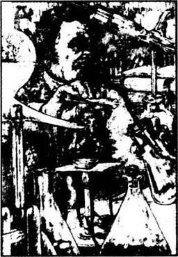
我生于18××年，拥有一大笔遗产、一个强健的身体和一个出色的头脑。当然，我也极为勤奋，不久，作为一名科学家，我在自己从事的领域里获得了巨大的成功。年纪虽轻，但不少重要人物都向我讨教。在那样的年纪，大多数年轻人都想出去寻欢作乐，而我的举止却像个花白头发的老人。
这对我来说并不容易。外面的人把我看成一本正经、勤奋工作的博士，但在这安静的性格下，却是活泼、爱玩的交际场里的年轻的花花公子。当然，这没什么可以引以为耻的，但是我那时没有意识到，我感到羞愧难当，这样，很快我就学会了把自己的两种生活截然分开。
我没有一点不诚实，这两个人都是我。那个严肃认真、事业有成的年轻博士是我，那个充满野性、寻欢作乐、不负责任的年轻人也是我。我想了很长一段时间，慢慢地，我明白这样并没有什么特别之处。每个人的性格都有两面性，他就是两个人，住在一起——当然常常是很不舒服地住在一个躯体里。
“那该有多奇妙，”我想，“如果我能分离开两种性格，给爱玩的这一边以充分的自由。这样，他就可以自己出去，玩个痛快，而把严肃认真、勤奋上进的杰基尔博士留下来，继续做对他至关重要、拯救生灵的工作。”
“这可能实现吗？”我怀疑，“能找到一种药，给自己性格的每一面配上不同的脸和躯体吗？”
我思考了很久，在做了仔细研究之后，我相信自己找到了答案。我看了很多科学方面的书籍，在实验室也花了不少时间，一直在寻找正确的化合物的剂量来配制我的药，最后，除了一种特制的盐类，我要的东西都齐了。后来，我从一个药剂师那里买到了，一切准备就绪了。
我在实验之前犹豫了好久，化合物里的成分要是有一点点差错，那就意味着立即死亡。但是，好奇心是如此强烈，终于克服了我的恐惧。在一个该诅咒的夜晚，我把各种成分混在一起，配成了我的药，我目不转睛地盯着一缕烟雾从液体里冒了出来，液体的颜色渐渐由红变紫，最后变成绿色。随后，我壮起胆子，喝干了这剂苦药。
我感到胃里剧烈地难受，骨头缝里都疼，屋子在我眼前转了起来，我怕得浑身发抖。不一会儿，恐惧和痛楚都消失了，取而代之的是一种奇怪而甜美的感觉。脑海里是令人晕眩的鲁莽冲动，都是些不严肃、不好的念头，是一个残忍、邪恶的家伙才有的念头。但是我觉得自己变年轻了，身体也轻快多了，精神上更加愉快。“即使是个十足的恶魔，”我想，“那我也喜欢他。”
我站在那里，在这些奇怪的想法和情绪中放纵自己——猛然间，我注意到自己个子变矮了。那时我的书房里没有镜子，后来我才放了一面，这样我可以观察自己外形的变化。那时已经是凌晨三点了，所有的仆人都睡了，我打定主意，就这个样子去卧室看看自己，这不会有问题的。我穿过花园，像陌生人一样进了屋，走进自己的房间，第一次见到了爱德华·海德的模样。
那时，我性格里好的一面比坏的一面强。亨利·杰基尔有自身的缺点，但总的说来是个正直、善良的人。虽不肯定，但我相信这就是爱德华·海德比亨利·杰基尔矮得多的原因。然而，他们的差别还不仅限于此。亨利·杰基尔有一张和蔼、开朗、诚实的面孔，而海德眼里透出的尽是邪恶的目光。但我并没有觉得不舒服，事实上，我很乐意接受他。爱德华·海德就是我，年轻，强壮，充满了活力。
但后来我发现海德的相貌和举止对别人的影响很大，凡是见到他的人没有不感到既厌恶又害怕的。这个原因，据我看，是因为每个人都是善与恶的混合体，即使是最坏的罪犯也略有好的一面，而只有海德是完完全全由恶组成的人。
我在镜子前面流连了好一阵。“难道我掉进陷阱里了？”我纳闷，“我还能恢复原样吗？天亮之前，我必须离开这间屋子，否则我会被当作小偷抓起来的。”
我赶紧回到书房，用颤抖的双手又配了另一份药喝下去，再一次遭受那可怕的疼痛和难受，但几秒钟过后，我重返原身，又恢复了亨利·杰基尔的身体、面貌和性格。
我为以后发生的事情深深感到自责，不是因为药，药剂本身没有错误，不好也不坏，但是它却打开了牢狱之门，让爱德华·海德得以逃脱，很快我就无法控制他了。你应该不会忘记，他是个彻头彻尾的恶人。杰基尔博士并非一切都好，可不管怎么说，他是个正常的人，有正常人的缺点和弱点，而海德对他来说太强大了。
那时，我很欢迎海德，仔细为他安排好了一切。我在伦敦的贫民区买了一所公寓，存放他的衣服，还雇用了一个仆人做家务。只要我想忘掉安静、严肃的自己，就喝上一剂药。刚开始的时候——愿上帝宽恕我——我觉得很有趣，杰基尔博士有名望，但没人认识海德，在他的躯体里，我愿意多自由就有多自由。
我不想多谈海德的历险和可耻的行为，杰基尔还和以前一样善良，总是尽量去弥补海德造成的破坏。但是随着时间的推移，杰基尔越来越不能控制海德了。
一天晚上，海德在街上弄伤了一个小女孩，有人在路上看到了他，那人就是你表弟，有一次你们俩散步到我的窗下，我认出了他。你表弟一把抓住海德，愤怒的人群聚了过来，要海德给孩子家人赔钱。为了脱身，海德最后给了你表弟一张杰基尔签名的支票。
从这件事上我吸取了教训，以后用海德的名字给他开了新的账户，我甚至给了他一个不同的笔迹。我想一切都万无一失了，但我错了。
在丹佛斯·卡鲁爵士遇害的两个月前，我又来了一次邪恶的冒险。睡觉前我吃了一剂药，变回杰基尔博士，第二天早晨醒来的时候我感到有什么不对劲……我看看房间四周，目光落在自己的手上。亨利·杰基尔的手宽大、白皙，十分匀称，而那天早晨被单上的手却十分瘦削，又灰又黑，而且毛茸茸的。这是爱德华·海德的手。
我瞪着这双手，惊奇得发呆，恐惧让我难受极了。“晚上睡觉的时候还是亨利·杰基尔，怎么醒来却成了爱德华·海德……这如何解释呢？更要命的是，我怎么去书房配药呢？”
我忽然意识到仆人们对海德来去出入已经习以为常了。我穿上海德的衣服，装模作样地穿过房间。普尔惊讶地瞪着眼，奇怪这么早就看见海德先生，但我也管不了那么多了。十分钟后，杰基尔博士又恢复了原形，坐下来，装出吃早餐的样子。
我担心得够呛，哪里还有胃口。我坐在那儿，想着这一切，意识到近几周来海德的体格开始长大，越来越强壮，而且性格也越来越强了。
“我怎么办？”我想，“要是海德控制了局面该如何是好？”我又想到了药，很早以前实验的时候，有过一次彻底失败，有些时候我必须吃两剂药才能变成海德，而现在却越来越容易了——困难的是冒险之后如何再变回杰基尔的样子。我的善良的一半和邪恶的一半在争夺着我的身心，而邪恶的一半渐渐占了上风。
看来我不得不在两者之间进行抉择了，我选择了杰基尔博士。也许我还有所保留，因为我没有卖掉海德的公寓，也没有烧毁他的衣服。有整整两个月，我是个安详、负责的人，但很快我就开始想念海德了——强壮的体魄，旺盛的生命力以及在那些无名、狭窄的伦敦小街上的种种不可告人的冒险经历。一天晚上，我觉得杰基尔的生活实在无聊、枯燥，于是我又制了一剂药，喝了下去。
突然，就像打开笼子的门，放出一只野兽，那天晚上，我像个十足的疯子一样把丹佛斯爵士活生生打死了——而且无缘无故。每打一下，我只感到狂野地兴奋。随后我跑回公寓把所有文件都烧毁了，我并不为自己的罪行感到汗颜，相反却洋洋得意，兴奋舒畅。回家的路上，我边走边重新回味了杀人的滋味。我感到自己那么强大，能主宰别人。爱德华·海德一边配药，一边哼着歌。
“为你的健康干杯，丹佛斯爵士！”他大笑着喝了药。先是一阵剧痛，随后可怜的亨利·杰基尔跪倒在地，乞求上帝的饶恕。
我又恢复了原形。我锁上了由小街通往实验室的门，弄断了钥匙，丢在一边。“海德先生，永别了！”我低声说道。
第二天，凶杀案的消息传遍了伦敦，女仆看到了一切，认出了海德。我的另一半成了警察要找的通缉犯。
我多少有点高兴，现在海德不能在这个世界上露面了，只要他一出来，伦敦所有正直的人都会毫不留情地向警方报告的。
我再一次过上忙碌、认真而快乐的生活，直到……那是1月一个天气晴朗的下午，我坐在公园的长椅上晒太阳，突然感到难受极了，全身颤抖，但很快又感觉一切都好了，而且还更年轻，强壮，无所畏惧。我看看自己，发现衣服一下子大了好多，放在膝盖上的手又成了海德那样，瘦骨嶙峋，长满了毛。几秒钟之前，我还是个名声显赫、受人尊敬的博士，一下子却成了恶毒的凶手，凶杀案的通缉犯。
怎么回书房吃药呢？从小街通往实验室的门锁了，钥匙也弄断了，没法从街上进家里，也不可能从大门进去，因为仆人都在那儿。我需要另外请人帮助，我想到了兰宁，但怎么找到他呢？怎么说服他让海德进他家呢？又怎么说服兰宁去撬开杰基尔博士的私人书房呢？看起来都行不通。
忽然我记起来了！虽然外表认不出我是杰基尔了，但我的笔迹没变，我还能以杰基尔博士的名义写封信！于是我叫了辆出租马车，让车夫驶到离兰宁家很近的一家旅馆那儿。当然杰基尔的衣服是太大了，坐上马车也不太容易。车夫看到我这副模样，忍俊不禁，笑了起来。我白了他一眼，立刻，笑容凝固在他的脸上。在绝望、恐惧和危急中，我好比是让伤痛激疯了的野兽，任何时候都会伤人，我恨不能把车夫从座位上揪下来，立刻就地杀了他。不过我还不笨，知道自己的性命要靠冷静行事，所以我好不容易才把杀人的欲望压了下去。
到了旅馆，我付了车钱，提着肥大的裤子，走进去，侍者望着我奇怪的样子都笑了起来。我恶狠狠地瞪了他们一眼，笑容也一下子不见了。我开了房间，他们领我到了一个单间，并拿来了纸笔。
海德遇到性命攸关的事对我来说还是第一次。他，——我写“他”是因为我没法写那是“我”——他根本不是人。此刻他没别的心思，只有恐惧和仇恨。海德是个彻头彻尾的地狱之子，但他还不傻，他知道自己的性命依赖两封信：一封是给兰宁的，一封是给普尔的，要是没办好，那他必死无疑。
他很仔细地写完两封信，交给当差的送走了。此后一整天他坐守在壁炉边，饭也在房间里吃，是一个吓破胆的侍者端来的。终于，当夜幕全部降临时，他坐上了一辆车门紧闭的出租马车，缩在角落里。“随便去哪儿。”他吩咐道。马车夫就在伦敦的街道上前前后后地转来转去。
后来，他想到马车夫可能会疑心，就把他打发走了，自己接着步行，穿着那套不合身的大衣服，样子很奇特，眼睛里仍然透出两种卑劣的感情：恐惧与仇恨。他一边走，一边自言自语，还碰到了个女人和他搭话。
“先生，买火柴吗？”她诚恳地问道。海德却抽了那女人一耳光，女人吓得逃得远远的。
我的计划成功了。我赶到兰宁家吃了药，又恢复了原形。
可是事后我立刻感到羞愧难当，也许是老朋友失魂落魄的样子使我不安，我也不太清楚。但我十分痛恨自己，而且意识到我在感情上发生了重要的变化。我不再害怕警察——我怕的是海德本人。一想到他那矮小、粗壮、毛茸茸的身体和邪恶、凶狠、极端自私的思想，我就浑身战栗。
那天的担惊受怕让我筋疲力尽，我沉沉睡去，早晨醒来后感到十分虚弱，不断发抖，但人还正常。我仍然痛恨和害怕心中那个狂暴的野兽，也没有忘记头天晚上令人胆寒的危险，不过我又回到了家，药就在手边，我真高兴自己九死一生，终于逃了回来。
早饭后，我去花园散步，呼吸呼吸冬天里凉飕飕的空气。突然身体又是一阵剧痛，就像每次吃过药后无以名状的痛苦折磨着我，刚刚碰到书房的门，心里又是一阵翻腾，忽而冰冷忽而灼热，充斥着海德狂野的欲望。我急不可耐地配了药，这次喝了双倍剂量才使我复原。但是，六个小时后，剧痛又回来了，我又得服药。
从那天起，情况恶化了，药量大了，次数也多了，只有这样才能维持着杰基尔的外貌。不知什么时候，痛楚就来了，尤其是睡觉的时候，我甚至害怕去睡觉，哪怕在椅子上睡几分钟。只要稍稍打一会儿盹，醒来就又变成了海德。
很快，杰基尔就成了一个病人，被发烧、疼痛和恐惧折磨得十分虚弱。而海德却比以前任何时候都更强大，不论对谁，对什么事情都充满了仇恨。他们之间现在对对方也怀着相同的仇恨。对杰基尔来说，他恨海德是因为海德邪恶而且没有人性，同时也因为海德比他强大。他整天提心吊胆，生怕一觉醒来变成海德的样子，有海德那种邪恶的欲望。海德恨杰基尔，原因却不同。他怕死——怕受到杀人的惩罚，这一点迫使他把杰基尔的身体当作藏身之所。但他又憎恨这所监狱，总想挣扎着逃出来，控制一切。他怨恨杰基尔软弱、忧郁、无助的样子，但他最恨的还是杰基尔对他的厌恶，所以他有时跟我捣蛋，激怒我。他撕我的书，在上面涂鸦，他还烧我的信，甚至毁了一幅我父亲的肖像。
只是海德自己怕死，所以才没有杀了我。他对生命渴望极了，他明白要是杀了我，他自己也就死了。我心里不禁对他多少有点怜悯。
继续忏悔也没有用了。最终，灾难还是到了，终于给我的惩罚画上了句号。很快我将永远失去自己的面貌和本性，因为只剩没几副药了。我派普尔去了同一家药店，他买回来后我就配了一剂，同样有沸腾，有烟雾冒出来，颜色从红变到紫，但没变成绿色。我喝下去，望着镜子，然而发现无效，爱德华·海德的面孔还在瞪着我。
我想普尔已经告诉你我找药找遍了伦敦，但却毫无结果，我这才明白第一批货是不纯的，正是我和药剂师都还不认识的那种杂质使我的药成功了。这么说来，我配的药便是偶然的发现，不可能重复的。
一个星期过去了，我用完了最后一点第一批买的药，这会儿我又是亨利·杰基尔了。但我写不了多少东西了，时间不够了。如果写这些忏悔时又变成海德，他会把这些纸撕成碎片来气我的。但如果我写完了，他也许不会注意到的。实际上，他也活不了多久，已经成了变态的人，就像陷阱里的困兽一样，坐在椅子里打战，哭泣，又是恨，又是怕。他一直听着警察的敲门声。他们会抓住他，把他送上绞刑架吗？他有勇气在最后一刻服下毒药吗？
好了，这些事我也管不了了。此刻是我生命真正终结的时刻。看到这个时，您所认识的亨利·杰基尔已经死了，剩下的故事是爱德华·海德的了。我放下了笔，同时也让亨利·杰基尔不幸的一生结束了吧。
Exercises
Exercises
A Checking your understanding
Chapters 1—2 Are these sentences true (T) or false (F)?
1 Richard Enfield was a distant cousin of Mr Utterson.
2 The child that Mr Hyde knocked down was very badly hurt.
3 Mr Hyde gave Enfield ninety pounds in gold and a cheque for ten pounds.
4 Mr Enfield had seen Mr Hyde use his key more than once.
5 Doctor Jekyll's will left everything he owned to Edward Hyde.
6 Doctor Lanyon knew Mr Hyde.
Chapters 3—4 Who said these words in the story?
1 'He's often away, and frequently stays away for months at a time.'
2 'He doesn't seem a very popular person.'
3 'An evil man, sir. You could see it in his face.'
4 'I promise you I'll never see him again.'
5 'He was planning to murder you. You've had a lucky escape.'
6 'The murderer was a madman, of course.'
Chapter 5—7 How much can you remember? Check your answers.
1 How long had Mr Utterson, Doctor Jekyll, and Doctor Lanyon been friends?
2 Where did the mysterious door in the side-street go to?
3 Who invited Doctor Jekyll to go for a walk?
4 What did Poole think had happened to Doctor Jekyll?
5 How did Mr Hyde die?
6 What did Utterson and Poole find on Jekyll's desk in the study?
Chapters 8—9 Write answers to these questions.
1 What did Doctor Jekyll ask his friend Lanyon to do for him?
2 How did Doctor Lanyon feel about his midnight visitor?
3 Why did Doctor Lanyon think that he had not long to live?
4 Why did Doctor Jekyll want to separate the two sides of his character?
5 How did Doctor Jekyll feel the first time he became Mr Hyde?
6 What were the differences in character between Jekyll and Hyde?
7 When did Doctor Jekyll first realize that Hyde was getting out of control?
8 Why did Doctor Jekyll lock himself up in his study?
9 Why couldn't Doctor Jekyll make any more of the drug?
B Working with language
1 Choose the best linking word and complete these sentences with in formation from the story.
1 Mr Utterson did not ask Enfield for the name on the cheque although/because...
2 Mr Utterson promised Doctor Jekyll that he would help Hyde after/unless...
3 Mr Utterson recognized the murder weapon so/because...
4 The police tried very hard to find Mr Hyde, and/but...
5 Mr Utterson could not open Lanyon's letter after/until...
6 Because/Although Mr Utterson visited Jekyll every day, Jekyll...
2 Put this summary of chapter 8 in the right order, and then join the parts together to make four sentences.
1 but he was filled with fear and horror
2 and then took them home with him.
3 When Doctor Lanyon received Doctor Jekyll's letter,
4 he told Doctor Lanyon that he could leave the room.
5 he decided to stay in the room and watch,
6 he went to Jekyll's house and got into the study.
7 when he saw the stranger change into Doctor Jekyll in front of his eyes.
8 but before he drank it,
9 He found the powders, the bottle and the book,
10 When the stranger arrived at Lanyon's house at midnight,
11 Although Lanyon thought that the stranger was mad,
12 he mixed himself a dose of the drug,
C Activities
1 Write a paragraph to describe one of the characters in the story.
2 When they were younger, Doctor Jekyll talked to Doctor Lanyon and explained his ideas and his search for a drug that could separate the two sides of a person's character. Imagine that you are Doctor Lanyon and that this meeting has just happened. Write a letter to Doctor Jekyll and tell him that you think these ideas are dangerous and unscientific rubbish.
3 Mr Utterson has just returned to Doctor Jekyll's study at the end of the story. The police have arrived and are asking questions about the death of Mr Hyde. Mr Utterson knows that the true story will not be believed, so he invents a story to tell the police. Imagine the conversation between Mr Utterson and the police inspector.
4 The story of Doctor Jekyll and Mr Hyde is a very famous one. Some people believe that there is a 'Jekyll' and a 'Hyde' in everybody. Imagine that there are two very different sides to your own character, and write a short description of each. (the 'Hyde' character in you does not have to be a criminal or a murderer!)
封底
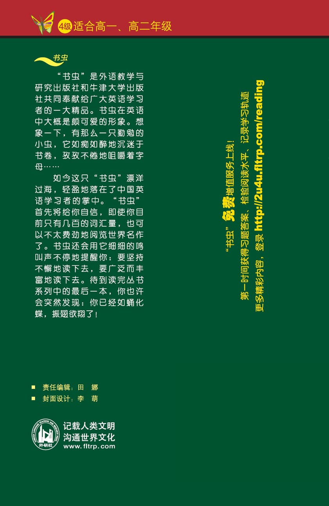